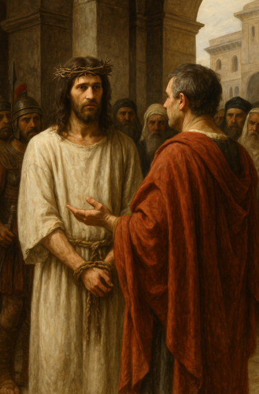

Capítulo 1 - Os Primórdios do Evangelho
João Batista Prepara o Caminho
Marcos
1:1-8
Começa com "Princípio do evangelho de Jesus Cristo, o Filho de Deus"
Cita Isaías: "Voz do que clama no deserto: 'Preparem o caminho para o Senhor'"
Descreve as roupas de João (pêlos de camelo, cinto de couro) e sua alimentação (gafanhotos e mel)
João anuncia: "Depois de mim vem alguém mais poderoso"
Não inclui as advertências específicas aos grupos.
Cita Isaías: "Voz do que clama no deserto: 'Preparem o caminho para o Senhor'"
Descreve as roupas de João (pêlos de camelo, cinto de couro) e sua alimentação (gafanhotos e mel)
João anuncia: "Depois de mim vem alguém mais poderoso"
Não inclui as advertências específicas aos grupos.
Mateus
3:1-12
Começa com "Naqueles dias surgiu João Batista, pregando no deserto da Judéia"
Cita Isaías: "Voz do que clama no deserto: 'Preparem o caminho para o Senhor'"
Descreve as roupas de João (pêlos de camelo, cinto de couro) e sua alimentação (gafanhotos e mel)
João anuncia: "Depois de mim vem alguém mais poderoso"
Advertências aos fariseus e saduceus: "Raça de víboras!"
Cita Isaías: "Voz do que clama no deserto: 'Preparem o caminho para o Senhor'"
Descreve as roupas de João (pêlos de camelo, cinto de couro) e sua alimentação (gafanhotos e mel)
João anuncia: "Depois de mim vem alguém mais poderoso"
Advertências aos fariseus e saduceus: "Raça de víboras!"
Lucas
3:1-18
Começa com contexto histórico detalhado (reinado de Tibério César, Pôncio Pilatos, etc.)
Cita Isaías com versículos adicionais sobre "todo vale será aterrado"
Não menciona as roupas ou alimentação de João
João anuncia: "Virá alguém mais poderoso do que eu"
Inclui instruções específicas para publicanos e soldados
Cita Isaías com versículos adicionais sobre "todo vale será aterrado"
Não menciona as roupas ou alimentação de João
João anuncia: "Virá alguém mais poderoso do que eu"
Inclui instruções específicas para publicanos e soldados
O Batismo de Jesus
Marcos
1:9-11
"Naquela ocasião Jesus veio de Nazaré da Galiléia e foi batizado por João no Jordão."
"Assim que saiu da água, Jesus viu os céus se abrindo, e o Espírito descendo como pomba sobre ele."
"Então veio dos céus uma voz: 'Tu és o meu Filho amado; em ti me agrado'."
"Assim que saiu da água, Jesus viu os céus se abrindo, e o Espírito descendo como pomba sobre ele."
"Então veio dos céus uma voz: 'Tu és o meu Filho amado; em ti me agrado'."
Mateus
3:13-17
"Então Jesus veio da Galiléia ao Jordão para ser batizado por João. João, porém, tentou impedi-lo, dizendo: 'Eu preciso ser batizado por ti, e tu vens a mim?'"
"Assim que Jesus foi batizado, saiu da água. Naquele momento os céus se abriram, e ele viu o Espírito de Deus descendo como pomba e pousando sobre ele."
"Então uma voz dos céus disse: 'Este é o meu Filho amado, em quem me agrado'."
"Assim que Jesus foi batizado, saiu da água. Naquele momento os céus se abriram, e ele viu o Espírito de Deus descendo como pomba e pousando sobre ele."
"Então uma voz dos céus disse: 'Este é o meu Filho amado, em quem me agrado'."
Lucas
3:21-22
"Quando todo o povo estava sendo batizado, também Jesus o foi."
"E, enquanto ele estava orando, o céu se abriu e o Espírito Santo desceu sobre ele em forma corpórea, como pomba."
"Então veio do céu uma voz: 'Tu és o meu Filho amado; em ti me agrado'."
"E, enquanto ele estava orando, o céu se abriu e o Espírito Santo desceu sobre ele em forma corpórea, como pomba."
"Então veio do céu uma voz: 'Tu és o meu Filho amado; em ti me agrado'."
A Tentação de Jesus
Marcos
1:12-13
"Logo após, o Espírito o impeliu para o deserto."
"Ali esteve quarenta dias, sendo tentado por Satanás. Estava com os animais selvagens, e os anjos o serviam."
Observação: Relato breve, sem detalhes das tentações específicas.
"Ali esteve quarenta dias, sendo tentado por Satanás. Estava com os animais selvagens, e os anjos o serviam."
Observação: Relato breve, sem detalhes das tentações específicas.
Mateus
4:1-11
"Então Jesus foi levado pelo Espírito ao deserto, para ser tentado pelo diabo."
"Depois de jejuar quarenta dias e quarenta noites, teve fome."
Tentações:
- 1. Transformar pedras em pão
- 2. Atirar-se do alto do templo
- 3. Adorar o diabo em troca dos reinos do mundo
"Então o diabo o deixou, e anjos vieram e o serviram."
"Depois de jejuar quarenta dias e quarenta noites, teve fome."
Tentações:
- 1. Transformar pedras em pão
- 2. Atirar-se do alto do templo
- 3. Adorar o diabo em troca dos reinos do mundo
"Então o diabo o deixou, e anjos vieram e o serviram."
Lucas
4:1-13
"Jesus, cheio do Espírito Santo, voltou do Jordão e foi levado pelo Espírito ao deserto, onde, durante quarenta dias, foi tentado pelo diabo."
Tentações (ordem diferente):
- 1. Transformar pedra em pão
- 2. Adorar o diabo em troca dos reinos do mundo
- 3. Atirar-se do alto do templo
"Tendo terminado todas essas tentações, o diabo o deixou até ocasião oportuna."
Tentações (ordem diferente):
- 1. Transformar pedra em pão
- 2. Adorar o diabo em troca dos reinos do mundo
- 3. Atirar-se do alto do templo
"Tendo terminado todas essas tentações, o diabo o deixou até ocasião oportuna."
Início do Ministério na Galileia
Marcos
1:14-15
14 "Depois que João foi preso, Jesus foi para a Galiléia, proclamando as boas novas de Deus."
15 "O tempo é chegado", dizia ele.
"O Reino de Deus está próximo. Arrependam-se e creiam nas boas novas!"
15 "O tempo é chegado", dizia ele.
"O Reino de Deus está próximo. Arrependam-se e creiam nas boas novas!"
Mateus
4:12-17
12 "Quando Jesus ouviu que João tinha sido preso, voltou para a Galiléia."
13 "Saindo de Nazaré, foi viver em Cafarnaum, que ficava junto ao mar, na região de Zebulom e Naftali,"
14 "para cumprir o que fora dito pelo profeta Isaías:"
15-16 "Terra de Zebulom e terra de Naftali, caminho do mar, além do Jordão, Galiléia dos gentios; o povo que vivia nas trevas viu uma grande luz; sobre os que viviam na terra da sombra da morte raiou uma luz".
17 " Daí em diante Jesus começou a pregar: "Arrependam-se, pois o Reino dos céus está próximo".
13 "Saindo de Nazaré, foi viver em Cafarnaum, que ficava junto ao mar, na região de Zebulom e Naftali,"
14 "para cumprir o que fora dito pelo profeta Isaías:"
15-16 "Terra de Zebulom e terra de Naftali, caminho do mar, além do Jordão, Galiléia dos gentios; o povo que vivia nas trevas viu uma grande luz; sobre os que viviam na terra da sombra da morte raiou uma luz".
17 " Daí em diante Jesus começou a pregar: "Arrependam-se, pois o Reino dos céus está próximo".
Lucas
4:14-15
14 "Jesus voltou para a Galiléia no poder do Espírito, e por toda aquela região se espalhou a sua fama."
15 " Ensinava nas sinagogas, e todos o elogiavam."
Não há menção específica da mensagem de arrependimento neste ponto em Lucas.
15 " Ensinava nas sinagogas, e todos o elogiavam."
Não há menção específica da mensagem de arrependimento neste ponto em Lucas.
Chamado dos Primeiros Discípulos
Marcos
1:16-20
16 "Andando à beira do mar da Galiléia, Jesus viu Simão e seu irmão André lançando redes ao mar, pois eram pescadores."
17 "E disse Jesus: "Sigam-me, e eu os farei pescadores de homens"."
18 "No mesmo instante eles deixaram as suas redes e o seguiram."
19 "Indo um pouco mais adiante, viu num barco Tiago, filho de Zebedeu, e João, seu irmão, preparando as suas redes."
20 "Logo os chamou, e eles o seguiram, deixando Zebedeu, seu pai, com os empregados no barco."
17 "E disse Jesus: "Sigam-me, e eu os farei pescadores de homens"."
18 "No mesmo instante eles deixaram as suas redes e o seguiram."
19 "Indo um pouco mais adiante, viu num barco Tiago, filho de Zebedeu, e João, seu irmão, preparando as suas redes."
20 "Logo os chamou, e eles o seguiram, deixando Zebedeu, seu pai, com os empregados no barco."
Mateus
4:18-22
18 " Andando à beira do mar da Galiléia, Jesus viu dois irmãos: Simão, chamado Pedro, e seu irmão André. Eles estavam lançando redes ao mar, pois eram pescadores."
19 "E disse Jesus: "Sigam-me, e eu os farei pescadores de homens""
20 "No mesmo instante eles deixaram as suas redes e o seguiram."
21 "Indo adiante, viu outros dois irmãos: Tiago, filho de Zebedeu, e João, seu irmão. Eles estavam num barco com seu pai, Zebedeu, preparando as suas redes. Jesus os chamou,"
22 "e eles, deixando imediatamente seu pai e o barco, o seguiram."
19 "E disse Jesus: "Sigam-me, e eu os farei pescadores de homens""
20 "No mesmo instante eles deixaram as suas redes e o seguiram."
21 "Indo adiante, viu outros dois irmãos: Tiago, filho de Zebedeu, e João, seu irmão. Eles estavam num barco com seu pai, Zebedeu, preparando as suas redes. Jesus os chamou,"
22 "e eles, deixando imediatamente seu pai e o barco, o seguiram."
Lucas
5:1-11
1-3 "Certo dia Jesus estava perto do lago de Genesaré, e uma multidão o comprimia para ouvir a palavra de Deus. Viu à beira do lago dois barcos, deixados ali pelos pescadores, que estavam lavando as suas redes. Entrou num dos barcos, o que pertencia a Simão, e pediu-lhe que o afastasse um pouco da praia. Então sentou-se, e do barco ensinava o povo."
4-7 "Tendo acabado de falar, disse a Simão: "Vá para onde as águas são mais fundas", e a todos: "Lancem as redes para a pesca". Simão respondeu: "Mestre, esforçamo-nos a noite inteira e não pegamos nada. Mas, porque és tu quem está dizendo isto, vou lançar as redes". Quando o fizeram, pegaram tal quantidade de peixes que as redes começaram a rasgar-se. Então fizeram sinais a seus companheiros no outro barco, para que viessem ajudá-los."
8-10 "Quando Simão Pedro viu isso, prostrou-se aos pés de Jesus e disse: "Afasta-te de mim, Senhor, porque sou um homem pecador!" Pois ele e todos os seus companheiros estavam perplexos com a pesca que haviam feito, como também Tiago e João, os filhos de Zebedeu, sócios de Simão."
10-11 " Jesus disse a Simão: "Não tenha medo; de agora em diante você será pescador de homens". Eles então arrastaram seus barcos para a praia, deixaram tudo e o seguiram."
4-7 "Tendo acabado de falar, disse a Simão: "Vá para onde as águas são mais fundas", e a todos: "Lancem as redes para a pesca". Simão respondeu: "Mestre, esforçamo-nos a noite inteira e não pegamos nada. Mas, porque és tu quem está dizendo isto, vou lançar as redes". Quando o fizeram, pegaram tal quantidade de peixes que as redes começaram a rasgar-se. Então fizeram sinais a seus companheiros no outro barco, para que viessem ajudá-los."
8-10 "Quando Simão Pedro viu isso, prostrou-se aos pés de Jesus e disse: "Afasta-te de mim, Senhor, porque sou um homem pecador!" Pois ele e todos os seus companheiros estavam perplexos com a pesca que haviam feito, como também Tiago e João, os filhos de Zebedeu, sócios de Simão."
10-11 " Jesus disse a Simão: "Não tenha medo; de agora em diante você será pescador de homens". Eles então arrastaram seus barcos para a praia, deixaram tudo e o seguiram."
Milagres e curas
Marcos
Diversos
1:21-28: Jesus expulsa um espírito imundo na sinagoga de Cafarnaum. O espírito reconhece Jesus como "o Santo de Deus".
1:29-31: Jesus cura a sogra de Simão que estava com febre. "Ela se levantou e começou a servi-los."
1:32-34: "Ao anoitecer... o povo levou a Jesus todos os doentes e os endemoninhados... e Jesus curou muitos."
1:40-45: Jesus, "cheio de compaixão", cura um leproso e o envia ao sacerdote.
1:29-31: Jesus cura a sogra de Simão que estava com febre. "Ela se levantou e começou a servi-los."
1:32-34: "Ao anoitecer... o povo levou a Jesus todos os doentes e os endemoninhados... e Jesus curou muitos."
1:40-45: Jesus, "cheio de compaixão", cura um leproso e o envia ao sacerdote.
Mateus
Diversos
Não há relato paralelo específico neste ponto.
8:14-15: Relato mais breve, mas com os mesmos elementos essenciais.
8:16-17: Mateus conecta as curas ao cumprimento da profecia de Isaías.
8:1-4: Relato mais breve, mas com os mesmos elementos essenciais.
8:14-15: Relato mais breve, mas com os mesmos elementos essenciais.
8:16-17: Mateus conecta as curas ao cumprimento da profecia de Isaías.
8:1-4: Relato mais breve, mas com os mesmos elementos essenciais.
Lucas
Diversoss
<4:31-37: Relato muito semelhante ao de Marcos, com o espírito reconhecendo Jesus como "o Santo de Deus".
4:38-39: Lucas acrescenta que Jesus "repreendeu a febre" e que a febre era "alta".
4:40-41: Lucas menciona que Jesus "impunha as mãos sobre cada um deles".
5:12-16: Lucas menciona que o homem estava "coberto de lepra" e que Jesus frequentemente se retirava para orar.
4:38-39: Lucas acrescenta que Jesus "repreendeu a febre" e que a febre era "alta".
4:40-41: Lucas menciona que Jesus "impunha as mãos sobre cada um deles".
5:12-16: Lucas menciona que o homem estava "coberto de lepra" e que Jesus frequentemente se retirava para orar.
Conclusão
- Marcos como fonte primária
Marcos é considerado o evangelho mais antigo e provavelmente serviu como fonte para Mateus e Lucas, que expandiram e adaptaram seu conteúdo. - Ênfases distintas
Cada evangelista enfatiza aspectos diferentes da mesma narrativa: Marcos é conciso e direto, Mateus destaca o cumprimento das profecias, e Lucas fornece mais contexto histórico e detalhes. - Complementaridade
As diferenças entre os evangelhos não são contradições, mas complementos que enriquecem nossa compreensão dos eventos da vida de Jesus. - Público-alvo
As diferenças refletem os diferentes públicos-alvo: Mateus escreveu principalmente para judeus, Marcos para romanos, e Lucas para gentios de cultura helenística.
5
Narrativas Principais
3
Evangelhos Sinóticos
12
Discípulos Chamados
40
Dias de Tentação
Imagens


Capítulo 2 - Autoridade e Misericórdia
Cura do Paralítico
Marcos
2:1-12
1-4 Poucos dias depois, tendo Jesus entrado em Cafarnaum... Vieram alguns homens, trazendo-lhe um paralítico, carregado por quatro deles. Não podendo levá-lo até Jesus, removeram parte da cobertura e baixaram a maca.
5-7 Vendo a fé que eles tinham, Jesus disse ao paralítico: "Filho, os seus pecados estão perdoados". Estavam sentados ali alguns mestres da lei: "Por que esse homem fala assim? Está blasfemando!"
10-12 "Para que vocês saibam que o Filho do homem tem autoridade para perdoar pecados — disse ao paralítico — Levante-se, pegue a sua maca e vá para casa". Ele se levantou, pegou a maca e saiu.
5-7 Vendo a fé que eles tinham, Jesus disse ao paralítico: "Filho, os seus pecados estão perdoados". Estavam sentados ali alguns mestres da lei: "Por que esse homem fala assim? Está blasfemando!"
10-12 "Para que vocês saibam que o Filho do homem tem autoridade para perdoar pecados — disse ao paralítico — Levante-se, pegue a sua maca e vá para casa". Ele se levantou, pegou a maca e saiu.
Mateus
9:1-8
1-2 Entrando Jesus num barco, atravessou o mar e foi para a sua própria cidade. Alguns homens trouxeram-lhe um paralítico, deitado numa cama.
3-4 Vendo a fé que eles tinham, Jesus disse ao paralítico: "Tenha bom ânimo, filho; os seus pecados estão perdoados". Diante disso, alguns mestres da lei disseram: "Este homem está blasfemando!"
6-7 "Para que vocês saibam que o Filho do homem tem autoridade para perdoar pecados" — disse ao paralítico: "Levante-se, pegue a sua maca e vá para casa". Ele se levantou e foi.
3-4 Vendo a fé que eles tinham, Jesus disse ao paralítico: "Tenha bom ânimo, filho; os seus pecados estão perdoados". Diante disso, alguns mestres da lei disseram: "Este homem está blasfemando!"
6-7 "Para que vocês saibam que o Filho do homem tem autoridade para perdoar pecados" — disse ao paralítico: "Levante-se, pegue a sua maca e vá para casa". Ele se levantou e foi.
Lucas
5:17-26
17-19 Certo dia, quando ele ensinava... Vieram alguns homens trazendo um paralítico numa maca. Não conseguindo entrar, subiram ao terraço e o baixaram através de uma abertura.
3-4 Vendo a fé que eles tinham, Jesus disse: "Homem, os seus pecados estão perdoados". Os fariseus e os mestres da lei começaram a pensar: "Quem é esse que blasfema?"
6-7 "Para que vocês saibam que o Filho do homem tem autoridade para perdoar pecados" — disse ao paralítico — "levante-se, pegue a sua maca e vá para casa". Imediatamente ele se levantou.
3-4 Vendo a fé que eles tinham, Jesus disse: "Homem, os seus pecados estão perdoados". Os fariseus e os mestres da lei começaram a pensar: "Quem é esse que blasfema?"
6-7 "Para que vocês saibam que o Filho do homem tem autoridade para perdoar pecados" — disse ao paralítico — "levante-se, pegue a sua maca e vá para casa". Imediatamente ele se levantou.
Mateus omite esse detalhe
Todos incluem a frase sobre a autoridade do Filho do homem
Chamado de Levi (Mateus)
Marcos
2:13-14
13 Jesus saiu outra vez para beira-mar. Uma grande multidão aproximou-se, e ele começou a ensiná-los.
14 Passando por ali, viu Levi, filho de Alfeu, sentado na coletoria, e disse-lhe: "Siga-me". Levi levantou-se e o seguiu.
14 Passando por ali, viu Levi, filho de Alfeu, sentado na coletoria, e disse-lhe: "Siga-me". Levi levantou-se e o seguiu.
Mateus
9:9
Não menciona Jesus ensinando antes do chamado.
9 Passando por ali, Jesus viu um homem chamado Mateus, sentado na coletoria, e disse-lhe: "Siga-me". Mateus levantou-se e o seguiu.
9 Passando por ali, Jesus viu um homem chamado Mateus, sentado na coletoria, e disse-lhe: "Siga-me". Mateus levantou-se e o seguiu.
Lucas
5:27-28
Não menciona Jesus ensinando antes do chamado.
27-28 Depois disso, Jesus saiu e viu um publicano chamado Levi, sentado na coletoria, e disse-lhe: "Siga-me". Levi levantou-se, deixou tudo e o seguiu.
27-28 Depois disso, Jesus saiu e viu um publicano chamado Levi, sentado na coletoria, e disse-lhe: "Siga-me". Levi levantou-se, deixou tudo e o seguiu.
Marcos o identifica como "filho de Alfeu"
Lucas enfatiza que Levi "deixou tudo" para seguir Jesus
Apenas Marcos menciona Jesus ensinando à beira-mar antes do chamado
Refeição com Publicanos e Pecadores
Marcos
2:15-17
15 Durante uma refeição na casa de Levi, muitos publicanos e "pecadores" estavam comendo com Jesus e seus discípulos, pois havia muitos que o seguiam.
16 Quando os mestres da lei que eram fariseus o viram comendo com "pecadores" e publicanos, perguntaram aos discípulos de Jesus: "Por que ele come com publicanos e 'pecadores'?"
17 Ouvindo isso, Jesus lhes disse: "Não são os que têm saúde que precisam de médico, mas sim os doentes. Eu não vim para chamar justos, mas pecadores".
16 Quando os mestres da lei que eram fariseus o viram comendo com "pecadores" e publicanos, perguntaram aos discípulos de Jesus: "Por que ele come com publicanos e 'pecadores'?"
17 Ouvindo isso, Jesus lhes disse: "Não são os que têm saúde que precisam de médico, mas sim os doentes. Eu não vim para chamar justos, mas pecadores".
Mateus
9:10-13
10 Estando Jesus em casa, foram comer com ele e seus discípulos muitos publicanos e "pecadores".
11 Vendo isso, os fariseus perguntaram aos discípulos dele: "Por que o mestre de vocês come com publicanos e 'pecadores'?"
12-13 Ouvindo isso, Jesus disse: "Não são os que têm saúde que precisam de médico, mas sim os doentes. Vão aprender o que significa isto: 'Desejo misericórdia, não sacrifícios'. Pois eu não vim chamar justos, mas pecadores".
11 Vendo isso, os fariseus perguntaram aos discípulos dele: "Por que o mestre de vocês come com publicanos e 'pecadores'?"
12-13 Ouvindo isso, Jesus disse: "Não são os que têm saúde que precisam de médico, mas sim os doentes. Vão aprender o que significa isto: 'Desejo misericórdia, não sacrifícios'. Pois eu não vim chamar justos, mas pecadores".
Lucas
5:29-32
29 Então Levi ofereceu um grande banquete a Jesus em sua casa. Havia muita gente comendo com eles: publicanos e outras pessoas.
30 Mas os fariseus e aqueles mestres da lei que eram da mesma facção queixaram-se aos discípulos de Jesus: "Por que vocês comem e bebem com publicanos e 'pecadores'?"
31-32 Jesus lhes respondeu: "Não são os que têm saúde que precisam de médico, mas sim os doentes. Eu não vim chamar justos, mas pecadores ao arrependimento".
30 Mas os fariseus e aqueles mestres da lei que eram da mesma facção queixaram-se aos discípulos de Jesus: "Por que vocês comem e bebem com publicanos e 'pecadores'?"
31-32 Jesus lhes respondeu: "Não são os que têm saúde que precisam de médico, mas sim os doentes. Eu não vim chamar justos, mas pecadores ao arrependimento".
Os publicanos eram coletores de impostos, considerados traidores por trabalhar para Roma e frequentemente acusados de corrupção. Eram desprezados pelos judeus religiosos.
Diferenças notáveis:
- 1. Lucas menciona que foi um "grande banquete" oferecido por Levi
- 2. Mateus acrescenta a citação: "Desejo misericórdia, não sacrifícios"
- 3. Lucas acrescenta "ao arrependimento" na resposta de Jesus.
Pergunta sobre o Jejum
Parábola do vinho novo em odres velhosMarcos
2:18-22
18 Os discípulos de João e os fariseus estavam jejuando. Algumas pessoas vieram a Jesus e lhe perguntaram: "Por que os discípulos de João e os dos fariseus jejuam, mas os teus não?"
19-20 Jesus respondeu: "Como podem os convidados do noivo jejuar enquanto este está com eles? Não podem, enquanto o têm consigo. Mas virão dias quando o noivo lhes será tirado; e nesse tempo jejuarão."
21-22 "Ninguém põe remendo de pano novo em roupa velha, pois o remendo forçará a roupa, tornando pior o rasgo. E ninguém põe vinho novo em vasilhas de couro velhas; se o fizer, o vinho rebentará as vasilhas, e tanto o vinho quanto as vasilhas se estragarão. Pelo contrário, põe-se vinho novo em vasilhas de couro novas".
19-20 Jesus respondeu: "Como podem os convidados do noivo jejuar enquanto este está com eles? Não podem, enquanto o têm consigo. Mas virão dias quando o noivo lhes será tirado; e nesse tempo jejuarão."
21-22 "Ninguém põe remendo de pano novo em roupa velha, pois o remendo forçará a roupa, tornando pior o rasgo. E ninguém põe vinho novo em vasilhas de couro velhas; se o fizer, o vinho rebentará as vasilhas, e tanto o vinho quanto as vasilhas se estragarão. Pelo contrário, põe-se vinho novo em vasilhas de couro novas".
Mateus
9:14-17
14 Então os discípulos de João vieram perguntar-lhe: "Por que nós e os fariseus jejuamos, mas os teus discípulos não?"
15 Jesus respondeu: "Como podem os convidados do noivo ficar de luto enquanto o noivo está com eles? Virão dias quando o noivo lhes será tirado; então jejuarão."
16-17 "Ninguém põe remendo de pano novo em roupa velha, pois o remendo forçará a roupa, tornando pior o rasgo. Nem se põe vinho novo em vasilhas de couro velhas; se o fizer, as vasilhas se rebentarão, o vinho se derramará e as vasilhas se estragarão. Pelo contrário, põe-se vinho novo em vasilhas de couro novas; e ambos se conservam".
15 Jesus respondeu: "Como podem os convidados do noivo ficar de luto enquanto o noivo está com eles? Virão dias quando o noivo lhes será tirado; então jejuarão."
16-17 "Ninguém põe remendo de pano novo em roupa velha, pois o remendo forçará a roupa, tornando pior o rasgo. Nem se põe vinho novo em vasilhas de couro velhas; se o fizer, as vasilhas se rebentarão, o vinho se derramará e as vasilhas se estragarão. Pelo contrário, põe-se vinho novo em vasilhas de couro novas; e ambos se conservam".
Lucas
5:33-39
33 E eles lhe disseram: "Os discípulos de João jejuam e oram freqüentemente, bem como os discípulos dos fariseus; mas os teus vivem comendo e bebendo".
34-35 Jesus respondeu: "Podem vocês fazer os convidados do noivo jejuar enquanto o noivo está com eles? Mas virão dias quando o noivo lhes será tirado; naqueles dias jejuarão".
36-38 "Ninguém tira remendo de roupa nova e o costura em roupa velha; se o fizer, estragará a roupa nova, além do que o remendo da nova não se ajustará à velha. E ninguém põe vinho novo em vasilhas de couro velhas; se o fizer, o vinho novo rebentará as vasilhas, se derramará, e as vasilhas se estragarão. Pelo contrário, vinho novo deve ser posto em vasilhas de couro novas."
34-35 Jesus respondeu: "Podem vocês fazer os convidados do noivo jejuar enquanto o noivo está com eles? Mas virão dias quando o noivo lhes será tirado; naqueles dias jejuarão".
36-38 "Ninguém tira remendo de roupa nova e o costura em roupa velha; se o fizer, estragará a roupa nova, além do que o remendo da nova não se ajustará à velha. E ninguém põe vinho novo em vasilhas de couro velhas; se o fizer, o vinho novo rebentará as vasilhas, se derramará, e as vasilhas se estragarão. Pelo contrário, vinho novo deve ser posto em vasilhas de couro novas."
Diferenças notáveis:
- 1. Lucas acrescenta detalhes à parábola do remendo
- 2. Lucas adiciona o versículo 39: "E ninguém, depois de beber o vinho velho, prefere o novo, pois diz: 'O vinho velho é melhor!'"
- 3. Mateus usa a expressão "ficar de luto" em vez de "jejuar".
Jesus e o Sábado
Marcos
2:23-28
23 Certo sábado Jesus estava passando pelas lavouras de cereal. Enquanto caminhavam, seus discípulos começaram a colher espigas.
24 Os fariseus lhe perguntaram: "Olha, por que eles estão fazendo o que não é permitido no sábado?"
25-26 Ele respondeu: "Vocês nunca leram o que fez Davi quando ele e seus companheiros estavam necessitados e com fome? Nos dias de Abiatar, o sumo sacerdote, ele entrou na casa de Deus e comeu os pães da Presença, que apenas aos sacerdotes era permitido comer, e os deu também aos seus companheiros".
27-28 E então lhes disse: "O sábado foi feito por causa do homem, e não o homem por causa do sábado. Assim, pois, o Filho do homem é Senhor até mesmo do sábado".
24 Os fariseus lhe perguntaram: "Olha, por que eles estão fazendo o que não é permitido no sábado?"
25-26 Ele respondeu: "Vocês nunca leram o que fez Davi quando ele e seus companheiros estavam necessitados e com fome? Nos dias de Abiatar, o sumo sacerdote, ele entrou na casa de Deus e comeu os pães da Presença, que apenas aos sacerdotes era permitido comer, e os deu também aos seus companheiros".
27-28 E então lhes disse: "O sábado foi feito por causa do homem, e não o homem por causa do sábado. Assim, pois, o Filho do homem é Senhor até mesmo do sábado".
Mateus
12:1-8
1 Naquela ocasião Jesus passou pelas lavouras de cereal no sábado. Seus discípulos estavam com fome e começaram a colher espigas para comer.
2 Os fariseus, vendo isso, lhe disseram: "Olha! Os teus discípulos estão fazendo o que não é permitido no sábado".
3-4 Ele respondeu: "Vocês não leram o que Davi fez quando ele e seus companheiros estavam com fome? Ele entrou na casa de Deus, e eles comeram os pães da Presença, o que não lhes era permitido fazer, mas apenas aos sacerdotes."
8 Pois o Filho do homem é Senhor do sábado.
2 Os fariseus, vendo isso, lhe disseram: "Olha! Os teus discípulos estão fazendo o que não é permitido no sábado".
3-4 Ele respondeu: "Vocês não leram o que Davi fez quando ele e seus companheiros estavam com fome? Ele entrou na casa de Deus, e eles comeram os pães da Presença, o que não lhes era permitido fazer, mas apenas aos sacerdotes."
8 Pois o Filho do homem é Senhor do sábado.
Lucas
6:1-5
1 Certo sábado, Jesus estava passando pelas lavouras de cereal. Seus discípulos começaram a colher algumas espigas, esfregando-as nas mãos para comer os grãos.
2 Alguns dos fariseus lhes perguntaram: "Por que vocês estão fazendo o que não é permitido no sábado?"
3-4 Jesus lhes respondeu: "Vocês nunca leram o que fez Davi quando ele e seus companheiros estavam com fome? Ele entrou na casa de Deus e, tomando os pães da Presença, comeu o que apenas aos sacerdotes era permitido comer, e os deu também aos seus companheiros".
5 E lhes dizia: "O Filho do homem é Senhor do sábado".
2 Alguns dos fariseus lhes perguntaram: "Por que vocês estão fazendo o que não é permitido no sábado?"
3-4 Jesus lhes respondeu: "Vocês nunca leram o que fez Davi quando ele e seus companheiros estavam com fome? Ele entrou na casa de Deus e, tomando os pães da Presença, comeu o que apenas aos sacerdotes era permitido comer, e os deu também aos seus companheiros".
5 E lhes dizia: "O Filho do homem é Senhor do sábado".
Diferenças notáveis:
- 1. Apenas Marcos inclui: "O sábado foi feito por causa do homem, e não o homem por causa do sábado"
- 2. Lucas menciona que os discípulos esfregavam as espigas nas mãos.
- 3. Todos citam o exemplo de Davi.
Conclusão
- Ênfases distintas
Cada evangelista enfatiza aspectos diferentes das mesmas narrativas: Marcos é mais conciso, Mateus acrescenta citações do Antigo Testamento, e Lucas fornece mais detalhes históricos e contextuais. - Estrutura narrativa
Marcos apresenta as narrativas em sequência contínua no capítulo 2, enquanto Mateus e Lucas reorganizam o material de acordo com seus propósitos teológicos específicos. - Temas centrais
O capítulo 2 de Marcos estabelece temas fundamentais que aparecem nos três evangelhos: a autoridade de Jesus para perdoar pecados, sua misericórdia para com os marginalizados, e sua nova interpretação da Lei. - Público-alvo
As diferenças refletem os diferentes públicos-alvo: Mateus escreveu principalmente para judeus (citando o AT), Marcos para romanos (estilo direto), e Lucas para gentios de cultura helenística (detalhes históricos).
4
Narrativas Principais
1
Paralítico Curado
1
Discípulo Chamado
3
Parábolas Ensinadas
Imagens
Capítulo 3 - Autoridade e Oposição
Cura do Homem com a Mão Atrofiada
Marcos
3:1-6
1-2 Noutra ocasião ele entrou na sinagoga, e estava ali um homem com uma das mãos atrofiada. Alguns deles estavam procurando um motivo para acusar Jesus.
3-4 Jesus disse ao homem: "Levante-se e venha para o meio". Depois perguntou: "O que é permitido fazer no sábado: o bem ou o mal, salvar a vida ou matar?"
5-6 Irado e entristecido pelos corações endurecidos, disse: "Estenda a mão". Ele a estendeu, e foi restaurada. Os fariseus saíram e conspiraram com os herodianos contra Jesus.
3-4 Jesus disse ao homem: "Levante-se e venha para o meio". Depois perguntou: "O que é permitido fazer no sábado: o bem ou o mal, salvar a vida ou matar?"
5-6 Irado e entristecido pelos corações endurecidos, disse: "Estenda a mão". Ele a estendeu, e foi restaurada. Os fariseus saíram e conspiraram com os herodianos contra Jesus.
Mateus
12:9-14
9-10 Saindo daquele lugar, dirigiu-se à sinagoga deles, e estava ali um homem com uma das mãos atrofiada. Procurando um motivo para acusar Jesus.
11-12 Ele respondeu: "Qual de vocês, se tiver uma ovelha e ela cair num buraco no sábado, não irá pegá-la? Quanto mais vale um homem do que uma ovelha!"
13-14 Então disse ao homem: "Estenda a mão". Ele a estendeu, e ela foi restaurada. Os fariseus saíram e começaram a conspirar sobre como poderiam matar Jesus.
11-12 Ele respondeu: "Qual de vocês, se tiver uma ovelha e ela cair num buraco no sábado, não irá pegá-la? Quanto mais vale um homem do que uma ovelha!"
13-14 Então disse ao homem: "Estenda a mão". Ele a estendeu, e ela foi restaurada. Os fariseus saíram e começaram a conspirar sobre como poderiam matar Jesus.
Lucas
6:6-11
6-7 Noutro sábado, ele entrou na sinagoga e começou a ensinar; estava ali um homem cuja mão direita era atrofiada. Os fariseus o observavam atentamente.
8-9 Jesus sabia o que pensavam e disse ao homem: "Levante-se e venha para o meio". Ele perguntou: "O que é permitido fazer no sábado: o bem ou o mal?"
10-11 Olhou para todos e disse ao homem: "Estenda a mão". Ele a estendeu, e ela foi restaurada. Eles ficaram furiosos e começaram a discutir o que poderiam fazer contra Jesus.
8-9 Jesus sabia o que pensavam e disse ao homem: "Levante-se e venha para o meio". Ele perguntou: "O que é permitido fazer no sábado: o bem ou o mal?"
10-11 Olhou para todos e disse ao homem: "Estenda a mão". Ele a estendeu, e ela foi restaurada. Eles ficaram furiosos e começaram a discutir o que poderiam fazer contra Jesus.
Diferenças notáveis:
- 1. Marcos menciona a ira e tristeza de Jesus.
- 2. Mateus inclui a parábola da ovelha.
- 3. Lucas especifica que era a mão direita.
- 4. Marcos menciona os herodianos.
Jesus e as Multidões
Marcos
3:7-12
7-8 Jesus retirou-se com os seus discípulos para o mar, e uma grande multidão vinda da Galiléia o seguia. Quando ouviram a respeito de tudo o que ele estava fazendo, muitas pessoas procedentes da Judéia, de Jerusalém, da Iduméia e das regiões do outro lado do Jordão e dos arredores de Tiro e de Sidom foram atrás dele.
9-10 Por causa da multidão, ele disse aos discípulos que lhe preparassem um pequeno barco, para evitar que o comprimissem. Pois ele havia curado a muitos, de modo que os que sofriam de doenças ficavam se empurrando para conseguir tocar nele.
11-12 Sempre que os espíritos imundos o viam, prostravam-se diante dele e gritavam: "Tu és o Filho de Deus". Mas ele lhes dava ordens severas para que não dissessem quem ele era.
9-10 Por causa da multidão, ele disse aos discípulos que lhe preparassem um pequeno barco, para evitar que o comprimissem. Pois ele havia curado a muitos, de modo que os que sofriam de doenças ficavam se empurrando para conseguir tocar nele.
11-12 Sempre que os espíritos imundos o viam, prostravam-se diante dele e gritavam: "Tu és o Filho de Deus". Mas ele lhes dava ordens severas para que não dissessem quem ele era.
Mateus
12:15-21
15 Sabendo disso, Jesus retirou-se daquele lugar. Muitos o seguiram, e ele curou a todos os doentes que havia entre eles,
16 advertindo-os que não dissessem quem ele era.
17-21 Isso aconteceu para se cumprir o que fora dito pelo do profeta Isaías: "Eis o meu servo, a quem escolhi, o meu amado, em quem tenho prazer. Porei sobre ele o meu Espírito, e ele anunciará justiça às nações..."
16 advertindo-os que não dissessem quem ele era.
17-21 Isso aconteceu para se cumprir o que fora dito pelo do profeta Isaías: "Eis o meu servo, a quem escolhi, o meu amado, em quem tenho prazer. Porei sobre ele o meu Espírito, e ele anunciará justiça às nações..."
Lucas
6:17-19
17 Jesus desceu com eles e parou num lugar plano. Estava ali muitos dos seus discípulos e imensa multidão procedente de toda a Judéia, de Jerusalém e do litoral de Tiro e de Sidom;
18-19 que vieram para ouvi-lo e serem curadas de suas doenças. Os que eram perturbados por espíritos imundos ficavam curados, e todos procuravam tocar nele, porque dele saía poder que curava a todos.
Não há menção específica aos espíritos imundos neste contexto, mas Lucas menciona a cura de pessoas perturbadas por espíritos imundos.
18-19 que vieram para ouvi-lo e serem curadas de suas doenças. Os que eram perturbados por espíritos imundos ficavam curados, e todos procuravam tocar nele, porque dele saía poder que curava a todos.
Não há menção específica aos espíritos imundos neste contexto, mas Lucas menciona a cura de pessoas perturbadas por espíritos imundos.
Diferenças notáveis:
- 1. Marcos fornece mais detalhes geográficos sobre a origem das multidões.
- 2. Mateus inclui uma citação de Isaías.
- 3. Marcos menciona o barco para evitar a multidão.
- 4. Lucas enfatiza o poder de cura que saía de Jesus.
A Escolha dos Doze Apóstolos
Marcos
3:13-19
13 Jesus subiu a um monte e chamou a si aqueles que ele quis, os quais vieram para junto dele.
14-15 Escolheu doze, designando-os como apóstolos, para que estivessem com ele, os enviasse a pregar e tivessem autoridade para expulsar demônios.
16-19 Estes são os doze que ele escolheu: Simão, a quem deu o nome de Pedro; Tiago, filho de Zebedeu, e João, seu irmão, aos quais deu o nome de Boanerges, que significa filhos do trovão; André; Filipe; Bartolomeu; Mateus; Tomé; Tiago, filho de Alfeu; Tadeu; Simão, o zelote, e Judas Iscariotes, que o traiu.
14-15 Escolheu doze, designando-os como apóstolos, para que estivessem com ele, os enviasse a pregar e tivessem autoridade para expulsar demônios.
16-19 Estes são os doze que ele escolheu: Simão, a quem deu o nome de Pedro; Tiago, filho de Zebedeu, e João, seu irmão, aos quais deu o nome de Boanerges, que significa filhos do trovão; André; Filipe; Bartolomeu; Mateus; Tomé; Tiago, filho de Alfeu; Tadeu; Simão, o zelote, e Judas Iscariotes, que o traiu.
Mateus
10:1-4
1 Jesus chamou seus doze discípulos e lhes deu autoridade para expulsar espíritos imundos e curar todas as doenças e enfermidades.
Mateus não menciona explicitamente a designação como "apóstolos", mas fala da autoridade dada a eles.
2-4 Estes são os nomes dos doze apóstolos: primeiro, Simão, chamado Pedro, e André, seu irmão; Tiago, filho de Zebedeu, e João, seu irmão; Filipe e Bartolomeu; Tomé e Mateus, o publicano; Tiago, filho de Alfeu, e Tadeu; Simão, o zelote, e Judas Iscariotes, que o traiu.
Mateus não menciona explicitamente a designação como "apóstolos", mas fala da autoridade dada a eles.
2-4 Estes são os nomes dos doze apóstolos: primeiro, Simão, chamado Pedro, e André, seu irmão; Tiago, filho de Zebedeu, e João, seu irmão; Filipe e Bartolomeu; Tomé e Mateus, o publicano; Tiago, filho de Alfeu, e Tadeu; Simão, o zelote, e Judas Iscariotes, que o traiu.
Lucas
6:12-16
12 Num daqueles dias, Jesus saiu para o monte a fim de orar, e passou a noite orando a Deus.
13 Ao amanhecer, chamou seus discípulos e escolheu doze deles, a quem também designou como apóstolos.
14-16 Simão, a quem deu o nome de Pedro; seu irmão André; Tiago; João; Filipe; Bartolomeu; Mateus; Tomé; Tiago, filho de Alfeu; Simão, chamado zelote; Judas, filho de Tiago; e Judas Iscariotes, que veio a ser o traidor.
13 Ao amanhecer, chamou seus discípulos e escolheu doze deles, a quem também designou como apóstolos.
14-16 Simão, a quem deu o nome de Pedro; seu irmão André; Tiago; João; Filipe; Bartolomeu; Mateus; Tomé; Tiago, filho de Alfeu; Simão, chamado zelote; Judas, filho de Tiago; e Judas Iscariotes, que veio a ser o traidor.
Diferenças notáveis:
- 1. Lucas menciona que Jesus passou a noite orando antes da escolha.
- 2. Marcos é o único que menciona o apelido "Boanerges" para Tiago e João.
- 3. Lucas chama "Tadeu" de "Judas, filho de Tiago".
- 4. Mateus identifica-se como "o publicano".
Acusação de Belzebu e o Pecado Imperdoável
Marcos
3:20-30
20-21 Então Jesus entrou numa casa... Quando seus familiares ouviram falar disso, saíram para apoderar-se dele, pois diziam: "Ele está fora de si".
22 E os mestres da lei que haviam descido de Jerusalém diziam: "Ele está com Belzebu! Pelo príncipe dos demônios é que ele expulsa demônios".
23-26 "Como pode Satanás expulsar Satanás? Se um reino estiver dividido contra si mesmo, não poderá subsistir. Se uma casa estiver dividida contra si mesma, também não poderá subsistir."
27 "De fato, ninguém pode entrar na casa do homem forte e levar dali os seus bens, sem que antes o amarre. Só então poderá roubar a casa dele."
28-29 "Eu lhes asseguro que todos os pecados e blasfêmias dos homens lhes serão perdoados, mas quem blasfemar contra o Espírito Santo nunca terá perdão: é culpado de pecado eterno".
22 E os mestres da lei que haviam descido de Jerusalém diziam: "Ele está com Belzebu! Pelo príncipe dos demônios é que ele expulsa demônios".
23-26 "Como pode Satanás expulsar Satanás? Se um reino estiver dividido contra si mesmo, não poderá subsistir. Se uma casa estiver dividida contra si mesma, também não poderá subsistir."
27 "De fato, ninguém pode entrar na casa do homem forte e levar dali os seus bens, sem que antes o amarre. Só então poderá roubar a casa dele."
28-29 "Eu lhes asseguro que todos os pecados e blasfêmias dos homens lhes serão perdoados, mas quem blasfemar contra o Espírito Santo nunca terá perdão: é culpado de pecado eterno".
Mateus
12:22-32
22 Então levaram-lhe um endemoninhado que era cego e mudo, e Jesus o curou, de modo que ele pôde falar e ver.
24 Mas quando os fariseus ouviram isso, disseram: "É somente por Belzebu, o príncipe dos demônios, que ele expulsa demônios".
25-26 "Todo reino dividido contra si mesmo será arruinado, e toda cidade ou casa dividida contra si mesma não subsistirá. Se Satanás expulsa Satanás, está dividido contra si mesmo."
29 "Ou como alguém pode entrar na casa do homem forte e levar dali seus bens, sem antes amarrá-lo? Só então poderá roubar a casa dele."
31-32 "Todo pecado e blasfêmia serão perdoados aos homens, mas a blasfêmia contra o Espírito não será perdoada... nem nesta era nem na era que há de vir."
24 Mas quando os fariseus ouviram isso, disseram: "É somente por Belzebu, o príncipe dos demônios, que ele expulsa demônios".
25-26 "Todo reino dividido contra si mesmo será arruinado, e toda cidade ou casa dividida contra si mesma não subsistirá. Se Satanás expulsa Satanás, está dividido contra si mesmo."
29 "Ou como alguém pode entrar na casa do homem forte e levar dali seus bens, sem antes amarrá-lo? Só então poderá roubar a casa dele."
31-32 "Todo pecado e blasfêmia serão perdoados aos homens, mas a blasfêmia contra o Espírito não será perdoada... nem nesta era nem na era que há de vir."
Lucas
11:14-23; 12:10
11:14 Jesus estava expulsando um demônio que era mudo. Quando o demônio saiu, o mudo falou, e a multidão ficou admirada.
11:15 Mas alguns deles disseram: "É por Belzebu, o príncipe dos demônios, que ele expulsa demônios".
11:17-18 "Todo reino dividido contra si mesmo será arruinado, e uma casa dividida contra si mesma cairá. Se Satanás está dividido contra si mesmo, como o seu reino pode subsistir?"
11:21-22 "Quando um homem forte e bem armado guarda sua casa, seus bens estão seguros. Mas quando alguém mais forte o ataca e o vence, tira-lhe a armadura..."
12:10 "Todo aquele que disser uma palavra contra o Filho do homem será perdoado, mas quem blasfemar contra o Espírito Santo não será perdoado."
11:15 Mas alguns deles disseram: "É por Belzebu, o príncipe dos demônios, que ele expulsa demônios".
11:17-18 "Todo reino dividido contra si mesmo será arruinado, e uma casa dividida contra si mesma cairá. Se Satanás está dividido contra si mesmo, como o seu reino pode subsistir?"
11:21-22 "Quando um homem forte e bem armado guarda sua casa, seus bens estão seguros. Mas quando alguém mais forte o ataca e o vence, tira-lhe a armadura..."
12:10 "Todo aquele que disser uma palavra contra o Filho do homem será perdoado, mas quem blasfemar contra o Espírito Santo não será perdoado."
Diferenças notáveis:
- 1. Apenas Marcos menciona que os familiares de Jesus pensavam que ele estava "fora de si".
- 2. Mateus e Lucas iniciam com a cura de um endemoninhado.
- 3. Lucas coloca o ensino sobre blasfêmia em contexto separado (cap. 12).
- 4. Mateus é mais detalhado na explicação sobre o pecado imperdoável.
A Verdadeira Família de Jesus
Marcos
3:31-35
31 Então chegaram a mãe e os irmãos de Jesus. Ficando do lado de fora, mandaram alguém chamá-lo.
32 Havia muita gente assentada ao seu redor; e lhe disseram: "Tua mãe e teus irmãos estão lá fora e te procuram".
33-34 "Quem é minha mãe, e quem são meus irmãos?", perguntou ele. Então olhou para os que estavam assentados ao seu redor e disse: "Aqui estão minha mãe e meus irmãos!"
35 Quem faz a vontade de Deus, este é meu irmão, minha irmã e minha mãe".
32 Havia muita gente assentada ao seu redor; e lhe disseram: "Tua mãe e teus irmãos estão lá fora e te procuram".
33-34 "Quem é minha mãe, e quem são meus irmãos?", perguntou ele. Então olhou para os que estavam assentados ao seu redor e disse: "Aqui estão minha mãe e meus irmãos!"
35 Quem faz a vontade de Deus, este é meu irmão, minha irmã e minha mãe".
Mateus
12:46-50
46 Falava ainda Jesus à multidão quando sua mãe e seus irmãos chegaram do lado de fora, querendo falar com ele.
47 Alguém lhe disse: "Tua mãe e teus irmãos estão lá fora e querem falar contigo".
48-49 "Quem é minha mãe, e quem são meus irmãos?", perguntou ele. E, estendendo a mão para os discípulos, disse: "Aqui estão minha mãe e meus irmãos!"
50 Pois quem faz a vontade de meu Pai que está nos céus, este é meu irmão, minha irmã e minha mãe".
47 Alguém lhe disse: "Tua mãe e teus irmãos estão lá fora e querem falar contigo".
48-49 "Quem é minha mãe, e quem são meus irmãos?", perguntou ele. E, estendendo a mão para os discípulos, disse: "Aqui estão minha mãe e meus irmãos!"
50 Pois quem faz a vontade de meu Pai que está nos céus, este é meu irmão, minha irmã e minha mãe".
Lucas
8:19-21
19 A mãe e os irmãos de Jesus foram vê-lo, mas não conseguiam aproximar-se dele por causa da multidão.
20 Alguém lhe disse: "Tua mãe e teus irmãos estão lá fora e querem ver-te".
21 Ele respondeu: "Minha mãe e meus irmãos são aqueles que ouvem a palavra de Deus e a praticam".
Já incluído na resposta acima
20 Alguém lhe disse: "Tua mãe e teus irmãos estão lá fora e querem ver-te".
21 Ele respondeu: "Minha mãe e meus irmãos são aqueles que ouvem a palavra de Deus e a praticam".
Já incluído na resposta acima
Diferenças notáveis:
- 1. Marcos e Mateus incluem a pergunta retórica de Jesus.
- 2. Lucas apresenta uma versão mais concisa.
- 3. Mateus menciona "a vontade de meu Pai que está nos céus".
- 4. Lucas enfatiza "ouvir a palavra de Deus e praticá-la".
Conclusão
- Ênfases distintas
Cada evangelista enfatiza aspectos diferentes das mesmas narrativas: Marcos fornece mais detalhes sobre as reações emocionais de Jesus, Mateus acrescenta citações do Antigo Testamento, e Lucas adiciona contextos históricos e detalhes específicos. - Estrutura narrativa
Marcos apresenta as narrativas em sequência contínua no capítulo 3, enquanto Mateus concentra a maioria no capítulo 12, e Lucas distribui as narrativas entre os capítulos 6, 8, 11 e 12, de acordo com seus propósitos teológicos específicos. - Temas centrais
O capítulo 3 de Marcos estabelece temas fundamentais que aparecem nos três evangelhos: a autoridade de Jesus sobre doenças e demônios, o conflito com os líderes religiosos, a formação de uma nova comunidade (os doze), e a redefinição do conceito de família. - Público-alvo
As diferenças refletem os diferentes públicos-alvo: Mateus escreveu principalmente para judeus (citando o AT), Marcos para romanos (estilo direto e detalhes emocionais), e Lucas para gentios de cultura helenística (detalhes históricos e linguagem mais refinada).
5
Narrativas Principais
12
Apóstolos Escolhidos
1
Pecado Imperdoável
7
Regiões Mencionadas
Imagens
Capítulo 4 - As Parábolas do Reino
Parábola do Semeador
Marcos
4:1-20
1-2 Jesus começou a ensinar à beira-mar... uma grande multidão reuniu-se, de modo que ele entrou num barco.
3-9 “Ouçam! O semeador saiu a semear...” (segue a parábola com os quatro tipos de solo).
10-20 Jesus explica a parábola aos discípulos: “O semeador semeia a palavra...” (explicação das quatro reações à Palavra).
3-9 “Ouçam! O semeador saiu a semear...” (segue a parábola com os quatro tipos de solo).
10-20 Jesus explica a parábola aos discípulos: “O semeador semeia a palavra...” (explicação das quatro reações à Palavra).
Mateus
13:1-23
1-3 Jesus saiu de casa e sentou-se à beira-mar. Reuniu-se junto dele uma multidão.
4-9 Parábola do semeador com os mesmos quatro tipos de solo.
10-17 Explica por que fala em parábolas: “Porque a vocês é dado conhecer os mistérios do Reino...”
18-23 Explicação da parábola aos discípulos.
4-9 Parábola do semeador com os mesmos quatro tipos de solo.
10-17 Explica por que fala em parábolas: “Porque a vocês é dado conhecer os mistérios do Reino...”
18-23 Explicação da parábola aos discípulos.
Lucas
8:4-15
4-8 “Saiu o semeador a semear sua semente...” (descrição da parábola com os solos).
9-10 Jesus explica por que fala em parábolas.
11-15 Explicação dos quatro tipos de solo, enfatizando o coração como o terreno.
9-10 Jesus explica por que fala em parábolas.
11-15 Explicação dos quatro tipos de solo, enfatizando o coração como o terreno.
Diferenças notáveis:
- 1. Marcos destaca o cenário à beira-mar e o barco como púlpito.
- 2. Mateus inclui uma explicação mais extensa sobre o uso de parábolas.
- 3. Lucas enfatiza que a "semente é a Palavra de Deus".
- 4. Todos mantêm os quatro tipos de solo, mas com pequenas variações de ênfase.
Outras Parábolas do Reino
Marcos
4:21-34
21-25 Parábola da candeia: “Nada há escondido que não venha a ser revelado”.
26-29 Parábola da semente que cresce sozinha: “O Reino de Deus é como o homem que lança a semente... e a terra por si só produz fruto”.
30-32 Parábola do grão de mostarda.
33-34 Jesus falava com muitas parábolas, conforme podiam compreender.
26-29 Parábola da semente que cresce sozinha: “O Reino de Deus é como o homem que lança a semente... e a terra por si só produz fruto”.
30-32 Parábola do grão de mostarda.
33-34 Jesus falava com muitas parábolas, conforme podiam compreender.
Mateus
13:24-52
24-30 Parábola do joio e do trigo.
31-32 Parábola do grão de mostarda.
33 Parábola do fermento.
36-43 Explicação do joio.
44-46 Parábola do tesouro escondido e da pérola.
47-50 Parábola da rede.
51-52 “Todo escriba instruído no Reino...”
31-32 Parábola do grão de mostarda.
33 Parábola do fermento.
36-43 Explicação do joio.
44-46 Parábola do tesouro escondido e da pérola.
47-50 Parábola da rede.
51-52 “Todo escriba instruído no Reino...”
Lucas
8:16-18; 13:18-21
8:16-18 Parábola da candeia: “Ninguém acende uma lâmpada para colocá-la debaixo da cama”.
13:18-19 Parábola do grão de mostarda.
13:20-21 Parábola do fermento.
13:18-19 Parábola do grão de mostarda.
13:20-21 Parábola do fermento.
Diferenças notáveis:
- 1. Apenas Marcos apresenta a parábola da semente que cresce sozinha.
- 2. Mateus é o mais extenso, incluindo sete parábolas seguidas.
- 3. Lucas agrupa as parábolas em outros capítulos e usa linguagem mais sucinta.
- 4. Marcos destaca a pedagogia de Jesus: ensinava “conforme podiam compreender”.
Conclusão
- Uso das parábolas
Este capítulo mostra o ensino parabólico como método central de Jesus. Ele revela verdades espirituais de forma acessível, mas também velada aos que não creem. - Diferenças editoriais
Mateus organiza uma coletânea temática de parábolas em um só capítulo (13), enquanto Marcos apresenta parábolas selecionadas com mais comentários narrativos. Lucas distribui essas parábolas em diferentes contextos. - Ênfase teológica
Marcos destaca a autoridade progressiva do Reino, Mateus enfatiza o juízo e o valor do Reino, e Lucas foca na receptividade à Palavra e sua expansão.
2
Parábolas com Explicação
9
Parábolas no Total
3
Evangelhos Comparados
1
Semente que Cresce Sozinha
Capítulo 5 - Libertação e Cura
O Endemoninhado Geraseno
Marcos
5:1-20
1-5 Chegaram à região dos gerasenos. Um homem possuído por um espírito imundo vivia entre os sepulcros; ninguém conseguia dominá-lo.
6-13 Jesus o confronta. O espírito se chama “Legião”. Jesus permite que os demônios entrem nos porcos, que se precipitam no mar.
14-20 As pessoas ficam assustadas e pedem que Jesus se retire. O homem liberto deseja segui-lo, mas Jesus o envia a testemunhar entre os seus.
6-13 Jesus o confronta. O espírito se chama “Legião”. Jesus permite que os demônios entrem nos porcos, que se precipitam no mar.
14-20 As pessoas ficam assustadas e pedem que Jesus se retire. O homem liberto deseja segui-lo, mas Jesus o envia a testemunhar entre os seus.
Mateus
8:28-34
28-29 Dois endemoninhados saem dos sepulcros para confrontar Jesus: “Vieste aqui para nos atormentar antes do tempo?”
30-32 Jesus permite que os demônios entrem nos porcos, que correm para o mar e morrem afogados.
33-34 Os moradores da cidade saem ao encontro de Jesus e pedem que ele se retire.
30-32 Jesus permite que os demônios entrem nos porcos, que correm para o mar e morrem afogados.
33-34 Os moradores da cidade saem ao encontro de Jesus e pedem que ele se retire.
Lucas
8:26-39
26-30 Chegam à região dos gerasenos. Um homem possuído por muitos demônios vivia nu, entre os sepulcros. Chamava-se Legião.
31-33 Os demônios suplicam para não serem enviados ao abismo. Jesus permite a entrada nos porcos, que se lançam no lago.
34-39 O homem liberto é encontrado vestido e em perfeito juízo. Jesus ordena que ele anuncie o que Deus fez por ele.
31-33 Os demônios suplicam para não serem enviados ao abismo. Jesus permite a entrada nos porcos, que se lançam no lago.
34-39 O homem liberto é encontrado vestido e em perfeito juízo. Jesus ordena que ele anuncie o que Deus fez por ele.
Diferenças notáveis:
- 1. Mateus menciona dois endemoninhados; Marcos e Lucas mencionam apenas um.
- 2. Marcos e Lucas detalham o nome “Legião” e a condição do homem.
- 3. Lucas destaca que o liberto ficou vestido e em juízo.
- 4. Mateus não menciona a missão dada ao homem após a libertação.
A Cura da Mulher e a Ressurreição da Filha de Jairo
Marcos
5:21-43
21-24 Jairo, chefe da sinagoga, pede a Jesus que cure sua filha à beira da morte. Jesus o acompanha.
25-34 No caminho, uma mulher com fluxo de sangue há 12 anos toca no manto de Jesus e é curada. Jesus a chama e elogia sua fé.
35-43 Jesus chega à casa de Jairo. A menina já havia morrido. Ele diz: “Talita cumi” e ela ressuscita.
25-34 No caminho, uma mulher com fluxo de sangue há 12 anos toca no manto de Jesus e é curada. Jesus a chama e elogia sua fé.
35-43 Jesus chega à casa de Jairo. A menina já havia morrido. Ele diz: “Talita cumi” e ela ressuscita.
Mateus
9:18-26
18-19 Um líder aproxima-se e diz: “Minha filha morreu; vem impor tua mão sobre ela e ela viverá”. Jesus o segue.
20-22 Uma mulher com fluxo de sangue toca na borda do manto. Jesus a vê e diz: “Tua fé te salvou”.
23-26 Jesus chega à casa, expulsa os que choravam, e ressuscita a menina.
20-22 Uma mulher com fluxo de sangue toca na borda do manto. Jesus a vê e diz: “Tua fé te salvou”.
23-26 Jesus chega à casa, expulsa os que choravam, e ressuscita a menina.
Lucas
8:40-56
40-42 Jairo, chefe da sinagoga, suplica por sua filha de 12 anos, à beira da morte.
43-48 No caminho, uma mulher com fluxo de sangue toca em Jesus. Ele percebe o toque, pergunta quem foi, e a elogia pela fé.
49-56 Chegam notícias da morte da menina. Jesus diz: “Não temas, crê somente”. Ele a ressuscita com as palavras: “Menina, levanta-te”.
43-48 No caminho, uma mulher com fluxo de sangue toca em Jesus. Ele percebe o toque, pergunta quem foi, e a elogia pela fé.
49-56 Chegam notícias da morte da menina. Jesus diz: “Não temas, crê somente”. Ele a ressuscita com as palavras: “Menina, levanta-te”.
Diferenças notáveis:
- 1. Mateus já assume que a menina está morta; Marcos e Lucas indicam que ela morre durante o caminho.
- 2. Marcos preserva as palavras originais de Jesus: “Talita cumi”.
- 3. Lucas destaca que Jesus só permitiu que Pedro, Tiago e João entrassem com ele.
- 4. Todos destacam a fé como elemento central da cura e ressurreição.
Conclusão
- Temas centrais
O capítulo 5 destaca o poder de Jesus sobre demônios, doenças e a própria morte, reforçando sua autoridade divina e sua compaixão pelos marginalizados. - Diferenças sinóticas
Mateus tende a condensar os relatos, enquanto Marcos e Lucas os expandem com mais detalhes narrativos e emocionais. Marcos enfatiza a ação; Lucas, o cuidado pessoal de Jesus. - Ênfase na fé
Tanto a mulher quanto Jairo recebem resposta de Jesus com base em sua fé. A fé é apresentada como canal de cura e milagre.
3
Milagres Registrados
2
Personagens Femininas Curadas
1
Resurreição
2000
Porcos Afogados
Capítulo 6 - Rejeição, Envio e Multiplicação
Rejeição em Nazaré
Marcos
6:1-6
1-3 Jesus foi a Nazaré e começou a ensinar na sinagoga. As pessoas se escandalizavam: “Não é este o carpinteiro, filho de Maria?”
4-6 Jesus disse: “Um profeta só é sem honra em sua própria terra”. Não pôde fazer muitos milagres ali, admirado pela incredulidade.
4-6 Jesus disse: “Um profeta só é sem honra em sua própria terra”. Não pôde fazer muitos milagres ali, admirado pela incredulidade.
Mateus
13:53-58
53-56 Jesus ensinava em Nazaré. As pessoas questionavam: “Não é este o filho do carpinteiro? Sua mãe não se chama Maria?”
57-58 Escandalizaram-se com ele. Jesus declarou que um profeta não é honrado em sua própria terra. Não realizou ali muitos milagres por causa da incredulidade.
57-58 Escandalizaram-se com ele. Jesus declarou que um profeta não é honrado em sua própria terra. Não realizou ali muitos milagres por causa da incredulidade.
Lucas
4:16-30
16-22 Jesus lê o rolo de Isaías na sinagoga de Nazaré e afirma: “Hoje se cumpriu esta escritura”.
23-30 A multidão se enfurece, leva-o até um precipício para lançá-lo, mas ele passa por entre eles e vai embora.
23-30 A multidão se enfurece, leva-o até um precipício para lançá-lo, mas ele passa por entre eles e vai embora.
Diferenças notáveis:
- 1. Marcos e Mateus relatam a rejeição com foco na incredulidade dos conterrâneos.
- 2. Lucas detalha a leitura na sinagoga e o conflito que leva a uma tentativa de homicídio.
- 3. Lucas antecipa esse episódio (cap. 4), enquanto os outros colocam após outras atividades de Jesus.
- 4. Marcos menciona que Jesus era "o carpinteiro", enquanto Mateus diz "filho do carpinteiro".
Envio dos Doze
Marcos
6:7-13
7-11 Jesus enviou os doze de dois em dois, com autoridade sobre espíritos imundos. Ordenou que levassem apenas um cajado.
12-13 Eles pregavam arrependimento, expulsavam demônios e curavam enfermos com óleo.
12-13 Eles pregavam arrependimento, expulsavam demônios e curavam enfermos com óleo.
Mateus
10:1-15
1-10 Jesus deu autoridade sobre espíritos imundos e enfermidades. Ordenou que não levassem ouro, nem sacola, nem sandálias extras.
11-15 Instruções sobre hospedagem e rejeição: “Se não vos receberem... sacudam o pó dos pés”.
11-15 Instruções sobre hospedagem e rejeição: “Se não vos receberem... sacudam o pó dos pés”.
Lucas
9:1-6
1-3 Jesus deu poder e autoridade sobre todos os demônios e doenças. Mandou que não levassem nada para o caminho.
4-6 Ordenou que permanecessem nas casas que os recebessem. Eles saíram pregando e curando por toda parte.
4-6 Ordenou que permanecessem nas casas que os recebessem. Eles saíram pregando e curando por toda parte.
Diferenças notáveis:
- 1. Marcos menciona o uso de óleo nas curas; os outros não.
- 2. Mateus traz instruções mais detalhadas e cita até cidades específicas.
- 3. Lucas resume em poucos versículos, mas enfatiza a autoridade universal dada aos discípulos.
- 4. Marcos e Lucas destacam o envio de “dois em dois”.
A Morte de João Batista
Marcos
6:14-29
14-20 Herodes ouviu falar de Jesus. Alguns diziam que João havia ressuscitado. Herodes temia João e o protegia, pois sabia que era justo.
21-29 Durante um banquete, Herodias faz sua filha dançar. Ela pede a cabeça de João. Herodes, contrariado, ordena a execução.
21-29 Durante um banquete, Herodias faz sua filha dançar. Ela pede a cabeça de João. Herodes, contrariado, ordena a execução.
Mateus
14:1-12
1-5 Herodes achava que Jesus era João reencarnado. Queria matá-lo, mas temia o povo.
6-12 No aniversário de Herodes, a filha de Herodias dança. A pedido da mãe, pede a cabeça de João. O rei manda decapitá-lo.
6-12 No aniversário de Herodes, a filha de Herodias dança. A pedido da mãe, pede a cabeça de João. O rei manda decapitá-lo.
Lucas
9:7-9
7-9 Herodes ficou perplexo ao ouvir falar de Jesus. Alguns diziam que era João ressuscitado. Herodes dizia: “Eu decapitei João. Quem é este de quem ouço essas coisas?”
Diferenças notáveis:
- 1. Marcos é o mais detalhado, incluindo a hesitação de Herodes e o banquete completo.
- 2. Mateus resume e foca na influência de Herodias.
- 3. Lucas apenas menciona a perplexidade de Herodes, sem relatar a morte em si.
- 4. Marcos destaca que Herodes ouvia João com interesse.
A Primeira Multiplicação dos Pães
Marcos
6:30-44
30-34 Os discípulos voltam e relatam o que fizeram. Jesus os leva para descansar, mas a multidão os segue. Ele se compadece e começa a ensinar.
35-44 Com cinco pães e dois peixes, Jesus alimenta cerca de cinco mil homens. Todos comeram e se saciaram.
35-44 Com cinco pães e dois peixes, Jesus alimenta cerca de cinco mil homens. Todos comeram e se saciaram.
Mateus
14:13-21
13-14 Ao ouvir sobre João, Jesus se retira. A multidão o segue, e ele cura os enfermos.
15-21 Os discípulos sugerem despedir o povo, mas Jesus ordena alimentá-los. Realiza o milagre com cinco pães e dois peixes.
15-21 Os discípulos sugerem despedir o povo, mas Jesus ordena alimentá-los. Realiza o milagre com cinco pães e dois peixes.
Lucas
9:10-17
10-11 Os apóstolos relatam suas missões. Jesus os leva para Betsaida. A multidão os segue, ele os acolhe, ensina e cura.
12-17 Jesus multiplica cinco pães e dois peixes. Todos se alimentam, e sobram doze cestos.
12-17 Jesus multiplica cinco pães e dois peixes. Todos se alimentam, e sobram doze cestos.
Diferenças notáveis:
- 1. Marcos destaca o cansaço dos discípulos e o desejo de descanso.
- 2. Mateus conecta o episódio à morte de João Batista.
- 3. Lucas menciona Betsaida como o local do milagre.
- 4. Todos destacam a compaixão de Jesus e o número de cestos recolhidos.
Conclusão
- Progresso do ministério
O capítulo mostra o avanço do ministério de Jesus: de rejeitado em sua terra, passa a enviar discípulos, impactar autoridades e alimentar multidões. - Ritmo narrativo
Marcos segue com relatos longos e encadeados; Mateus dá mais ênfase às palavras de Jesus; Lucas resume os eventos, focando no impacto. - A fé diante da rejeição
Mesmo diante da rejeição e da morte de João, Jesus continua sua missão, mostrando o poder do Reino de Deus em ação.
4
Eventos Paralelos
12
Cestos Recolhidos
5000
Homens Alimentados
1
Morte de Profeta
Capítulo 7 - Tradições Humanas e Coração Puro
Jesus e a Tradição dos Anciãos
Marcos
7:1-23
1-8 Fariseus e escribas criticam os discípulos por comerem sem lavar as mãos. Jesus os confronta: “Vocês anulam o mandamento de Deus por causa da tradição dos homens.”
9-13 Jesus cita o caso do Corbã para mostrar como eles invalidam a Palavra de Deus.
14-23 Jesus ensina que o que contamina o homem não é o que entra, mas o que sai do coração: “Do coração procedem maus pensamentos...”
9-13 Jesus cita o caso do Corbã para mostrar como eles invalidam a Palavra de Deus.
14-23 Jesus ensina que o que contamina o homem não é o que entra, mas o que sai do coração: “Do coração procedem maus pensamentos...”
Mateus
15:1-20
1-9 Os fariseus questionam por que os discípulos quebram a tradição. Jesus cita Isaías: “Este povo honra-me com os lábios, mas o coração está longe de mim.”
10-14 Jesus diz à multidão: “Não é o que entra pela boca que contamina o homem”. Os discípulos comentam que os fariseus se escandalizaram.
15-20 Jesus explica que o que sai da boca procede do coração, e é isso que contamina.
10-14 Jesus diz à multidão: “Não é o que entra pela boca que contamina o homem”. Os discípulos comentam que os fariseus se escandalizaram.
15-20 Jesus explica que o que sai da boca procede do coração, e é isso que contamina.
Lucas
—
Lucas não registra este episódio diretamente.
Diferenças notáveis:
- 1. Marcos detalha mais o conflito e cita o Corbã como exemplo.
- 2. Mateus insere a reação dos discípulos à ofensa dos fariseus.
- 3. Ambos destacam que a verdadeira impureza vem do coração.
- 4. Lucas não traz essa discussão em sua narrativa.
A Mulher Siro-Fenícia
Marcos
7:24-30
24-26 Jesus vai para a região de Tiro. Uma mulher gentia, siro-fenícia de origem, pede pela libertação da filha endemoninhada.
27-30 Jesus diz: “Não é certo tirar o pão dos filhos e lançá-lo aos cachorrinhos.” Ela responde com fé, e Jesus concede o milagre.
27-30 Jesus diz: “Não é certo tirar o pão dos filhos e lançá-lo aos cachorrinhos.” Ela responde com fé, e Jesus concede o milagre.
Mateus
15:21-28
21-22 Jesus retira-se para Tiro e Sidom. Uma mulher cananeia clama por ajuda para a filha endemoninhada.
23-28 Jesus a princípio não responde. Os discípulos pedem para mandá-la embora. Após diálogo de fé, Jesus elogia sua fé e realiza o milagre.
23-28 Jesus a princípio não responde. Os discípulos pedem para mandá-la embora. Após diálogo de fé, Jesus elogia sua fé e realiza o milagre.
Lucas
—
Lucas não registra este episódio.
Diferenças notáveis:
- 1. Marcos a chama de siro-fenícia; Mateus de cananeia.
- 2. Mateus registra a insistência e a resposta de fé da mulher com mais detalhes.
- 3. Marcos enfatiza o diálogo curto e direto.
- 4. Lucas não menciona esse evento.
Cura de um Surdo e Gago
Marcos
7:31-37
31-35 Jesus vai à região de Decápolis. Trouxeram-lhe um homem surdo e com dificuldade de falar. Jesus o leva à parte, toca-lhe os ouvidos, cospe e toca-lhe a língua, e diz: “Efatá”.
36-37 O homem é curado. As pessoas ficam admiradas: “Tudo ele faz bem.”
36-37 O homem é curado. As pessoas ficam admiradas: “Tudo ele faz bem.”
Mateus
—
Mateus não registra essa cura de forma individualizada.
Lucas
—
Lucas também não registra este milagre específico.
Diferenças notáveis:
- 1. Apenas Marcos registra esse milagre com riqueza de detalhes.
- 2. A palavra “Efatá” (“abra-se”) é preservada no original aramaico.
- 3. A reação das pessoas enfatiza a perfeição da obra de Jesus.
- 4. Mateus e Lucas não trazem esse evento.
Conclusão
- Pureza verdadeira
Jesus confronta as tradições humanas e ensina que a verdadeira pureza está no coração e nas intenções, não em rituais externos. - A fé dos gentios
O capítulo destaca a fé de uma mulher não israelita, reforçando o alcance universal da graça de Deus. - Poder de cura
Mesmo em regiões gentílicas, Jesus continua operando milagres, mostrando que sua missão vai além de Israel.
3
Narrativas Registradas
1
Mulher Gentia Curada
1
Milagre Exclusivo de Marcos
0
Paralelos em Lucas
Imagens
Capítulo 8 - Sinais, Advertências e Revelações
Segunda Multiplicação dos Pães
Marcos
8:1-10
1-3 Uma grande multidão estava com Jesus havia três dias, sem comer. Ele se compadece e quer alimentá-los.
4-10 Com sete pães e alguns peixes, Jesus alimenta cerca de quatro mil pessoas. Sobram sete cestos.
4-10 Com sete pães e alguns peixes, Jesus alimenta cerca de quatro mil pessoas. Sobram sete cestos.
Mateus
15:32-39
32-34 Jesus chama os discípulos e expressa compaixão pela multidão que está com ele há três dias.
35-39 Com sete pães e alguns peixinhos, alimenta quatro mil homens, além de mulheres e crianças. Sete cestos cheios são recolhidos.
35-39 Com sete pães e alguns peixinhos, alimenta quatro mil homens, além de mulheres e crianças. Sete cestos cheios são recolhidos.
Lucas
—
Lucas não registra a segunda multiplicação dos pães.
Diferenças notáveis:
- 1. Marcos e Mateus registram o milagre de forma quase idêntica.
- 2. Apenas Marcos menciona explicitamente o número de dias de jejum.
- 3. Lucas não relata esse segundo milagre.
- 4. O número de cestos e de pessoas é diferente do primeiro milagre (capítulo 6).
O Sinal de Jonas e o Fermento dos Fariseus
Marcos
8:11-21
11-13 Os fariseus pedem um sinal do céu. Jesus suspira profundamente e diz: “Nenhum sinal será dado a esta geração.”
14-21 No barco, Jesus alerta contra o “fermento dos fariseus e de Herodes”. Os discípulos pensam que é por falta de pão.
14-21 No barco, Jesus alerta contra o “fermento dos fariseus e de Herodes”. Os discípulos pensam que é por falta de pão.
Mateus
16:1-12
1-4 Fariseus e saduceus pedem um sinal. Jesus responde que o único sinal será o de Jonas.
5-12 Jesus adverte contra o fermento dos fariseus e saduceus. Os discípulos compreendem que ele falava da doutrina deles.
5-12 Jesus adverte contra o fermento dos fariseus e saduceus. Os discípulos compreendem que ele falava da doutrina deles.
Lucas
11:29-32; 12:1
11:29-32 Jesus diz que esta é uma geração má, que pede sinal. O único sinal será o de Jonas. Ele cita a rainha do Sul e os ninivitas.
12:1 Jesus adverte os discípulos: “Acautelai-vos do fermento dos fariseus, que é a hipocrisia.”
12:1 Jesus adverte os discípulos: “Acautelai-vos do fermento dos fariseus, que é a hipocrisia.”
Diferenças notáveis:
- 1. Marcos é o único a mencionar os herodianos junto aos fariseus.
- 2. Mateus e Lucas ligam diretamente o sinal a Jonas, enquanto Marcos apenas nega qualquer sinal.
- 3. Lucas detalha a explicação com referência a exemplos históricos.
- 4. O fermento é explicado como doutrina (Mateus) e hipocrisia (Lucas).
Cura do Cego de Betsaida
Marcos
8:22-26
22-23 Levam um cego até Jesus em Betsaida. Ele o leva para fora da aldeia, cospe nos olhos dele e impõe-lhe as mãos.
24-26 O homem enxerga parcialmente a princípio. Jesus impõe as mãos novamente, e ele passa a ver claramente.
24-26 O homem enxerga parcialmente a princípio. Jesus impõe as mãos novamente, e ele passa a ver claramente.
Mateus
—
Mateus não registra essa cura específica.
Lucas
—
Lucas também não registra esse milagre.
Diferenças notáveis:
- 1. Apenas Marcos registra esse milagre.
- 2. É o único milagre registrado em etapas (visão parcial e depois total).
- 3. Jesus proíbe que o homem volte para a aldeia.
- 4. Este evento pode simbolizar a revelação gradual da identidade de Jesus.
A Confissão de Pedro
Marcos
8:27-30
27-30 Jesus pergunta aos discípulos quem as pessoas dizem que ele é. Pedro responde: “Tu és o Cristo.” Jesus os adverte para não dizerem isso a ninguém.
Mateus
16:13-20
13-16 Pedro declara: “Tu és o Cristo, o Filho do Deus vivo.”
17-20 Jesus responde: “Bem-aventurado és tu... sobre esta pedra edificarei a minha igreja.” Proíbe que divulguem isso.
17-20 Jesus responde: “Bem-aventurado és tu... sobre esta pedra edificarei a minha igreja.” Proíbe que divulguem isso.
Lucas
9:18-21
18-21 Jesus ora em particular e pergunta aos discípulos. Pedro responde: “O Cristo de Deus.” Jesus ordena que não digam isso a ninguém.
Diferenças notáveis:
- 1. Mateus é o único que inclui a bem-aventurança e a promessa sobre a Igreja.
- 2. Marcos e Lucas são mais sucintos.
- 3. Todos registram a confissão de Pedro como um ponto de virada no ministério de Jesus.
- 4. A ordem de silêncio está presente nos três evangelhos.
Conclusão
- Identidade progressiva
Este capítulo marca uma transição: os sinais e milagres apontam para a verdadeira identidade de Jesus, culminando na confissão de Pedro. - Percepção espiritual
A cura gradual do cego simboliza o processo de revelação espiritual vivido também pelos discípulos. - Fé e cegueira
Jesus confronta a incredulidade dos fariseus e corrige a incompreensão dos discípulos, preparando-os para a revelação de sua missão.
4
Eventos Registrados
4000
Pessoas Alimentadas
7
Cestos Recolhidos
1
Confissão Messiânica
Imagens
Capítulo 9 - Glória, Poder e Instrução
A Transfiguração
Marcos
9:2-13
2-4 Seis dias depois, Jesus leva Pedro, Tiago e João a um monte alto e é transfigurado diante deles. Suas roupas se tornam brancas. Aparecem Elias e Moisés.
5-8 Pedro sugere fazer tendas. Uma nuvem os cobre, e ouve-se: “Este é meu Filho amado. Ouçam-no!”.
9-13 Jesus ordena silêncio até sua ressurreição. Os discípulos questionam sobre Elias. Jesus afirma que Elias já veio (referência a João Batista).
5-8 Pedro sugere fazer tendas. Uma nuvem os cobre, e ouve-se: “Este é meu Filho amado. Ouçam-no!”.
9-13 Jesus ordena silêncio até sua ressurreição. Os discípulos questionam sobre Elias. Jesus afirma que Elias já veio (referência a João Batista).
Mateus
17:1-13
1-3 Jesus leva os três discípulos a um monte alto e é transfigurado. Seu rosto brilha como o sol e suas roupas se tornam brancas como a luz.
4-8 Pedro fala sobre fazer tendas. Uma nuvem luminosa os envolve: “Este é meu Filho amado, em quem me agrado. Ouçam-no!”.
9-13 Jesus ordena silêncio. Os discípulos perguntam sobre Elias. Ele confirma que Elias veio e não foi reconhecido.
4-8 Pedro fala sobre fazer tendas. Uma nuvem luminosa os envolve: “Este é meu Filho amado, em quem me agrado. Ouçam-no!”.
9-13 Jesus ordena silêncio. Os discípulos perguntam sobre Elias. Ele confirma que Elias veio e não foi reconhecido.
Lucas
9:28-36
28-31 Cerca de oito dias depois, Jesus sobe ao monte para orar. Enquanto orava, transfigura-se. Moisés e Elias aparecem, falando de sua partida.
32-36 Os discípulos estavam sonolentos. Uma nuvem os envolve, e ouvem: “Este é meu Filho, o Escolhido. Ouçam-no!”.
32-36 Os discípulos estavam sonolentos. Uma nuvem os envolve, e ouvem: “Este é meu Filho, o Escolhido. Ouçam-no!”.
Diferenças notáveis:
- 1. Marcos e Mateus dizem “seis dias depois”; Lucas diz “cerca de oito”.
- 2. Lucas destaca que Jesus orava e que os discípulos estavam com sono.
- 3. Mateus menciona que o rosto de Jesus brilhou como o sol.
- 4. Todos relatam a presença de Moisés, Elias e a voz divina.
Cura de um Menino Possesso
Marcos
9:14-29
14-18 Ao descerem, encontram os discípulos discutindo com os mestres da lei. Um pai relata que seu filho tem um espírito que o joga no fogo e na água.
19-27 Jesus repreende a incredulidade: “Se podes crer...”. O pai clama: “Ajuda a minha incredulidade!”. Jesus liberta o menino.
28-29 Os discípulos perguntam por que não conseguiram expulsar o demônio. Jesus responde: “Essa espécie só sai com oração.”
19-27 Jesus repreende a incredulidade: “Se podes crer...”. O pai clama: “Ajuda a minha incredulidade!”. Jesus liberta o menino.
28-29 Os discípulos perguntam por que não conseguiram expulsar o demônio. Jesus responde: “Essa espécie só sai com oração.”
Mateus
17:14-21
14-16 Um pai implora ajuda para o filho epiléptico, que sofre grandemente. Os discípulos não conseguiram curá-lo.
17-18 Jesus repreende a geração incrédula, expulsa o demônio, e o menino fica curado.
19-21 Jesus explica que foi por causa da pouca fé deles: “Se tiverem fé como um grão de mostarda...”
17-18 Jesus repreende a geração incrédula, expulsa o demônio, e o menino fica curado.
19-21 Jesus explica que foi por causa da pouca fé deles: “Se tiverem fé como um grão de mostarda...”
Lucas
9:37-43
37-40 No dia seguinte, um homem grita que seu único filho é atormentado por um espírito. Os discípulos não conseguiram expulsá-lo.
41-43 Jesus responde: “Geração incrédula...”. Repreende o espírito e entrega o menino ao pai. Todos ficam maravilhados.
41-43 Jesus responde: “Geração incrédula...”. Repreende o espírito e entrega o menino ao pai. Todos ficam maravilhados.
Diferenças notáveis:
- 1. Marcos dá mais detalhes sobre a crise do menino e a reação do pai.
- 2. Mateus associa a cura à fé como um grão de mostarda.
- 3. Lucas enfatiza que era o único filho do homem.
- 4. Marcos menciona a oração como meio necessário para expulsão.
Segundo Anúncio da Paixão
Marcos
9:30-32
30-32 Jesus passa pela Galileia e anuncia que será entregue, morto e ressuscitará. Os discípulos não compreendem e têm medo de perguntar.
Mateus
17:22-23
22-23 Jesus diz que será entregue nas mãos dos homens, será morto e ressuscitará ao terceiro dia. Os discípulos ficam profundamente tristes.
Lucas
9:43-45
43-45 Jesus anuncia sua entrega. Eles não entendem, pois o sentido estava encoberto, e tinham receio de perguntar.
Diferenças notáveis:
- 1. Mateus destaca a tristeza dos discípulos; Marcos e Lucas, o medo e a incompreensão.
- 2. Lucas associa o anúncio ao espanto com os feitos de Jesus.
- 3. Todos indicam que os discípulos não compreendiam ainda o plano da cruz.
Conclusão
- Revelação progressiva
O capítulo mostra a revelação crescente da identidade e missão de Jesus: da glória no monte à cruz anunciada no vale. - Contraste entre fé e incredulidade
Enquanto o céu declara quem é Jesus, a terra se revela incrédula. Os discípulos ainda lutam para compreender. - A glória antecede a cruz
A Transfiguração antecipa a vitória da ressurreição, mesmo enquanto Jesus caminha rumo ao sofrimento.
3
Eventos Centrais
3
Testemunhas da Transfiguração
2
Anúncios da Paixão
1
Confissão de Fé
Imagens
Capítulo 10 - Ensinamentos sobre o Reino e o Discipulado
Ensino sobre o Divórcio
Marcos
10:1-12
1-4 Fariseus perguntam se é lícito ao homem divorciar-se. Jesus pergunta: “O que Moisés ordenou?”
5-9 Jesus afirma que foi por dureza de coração, mas no princípio não foi assim: “O que Deus uniu, o homem não separe”.
10-12 Em casa, Jesus afirma que quem se divorcia e casa com outra pessoa comete adultério.
5-9 Jesus afirma que foi por dureza de coração, mas no princípio não foi assim: “O que Deus uniu, o homem não separe”.
10-12 Em casa, Jesus afirma que quem se divorcia e casa com outra pessoa comete adultério.
Mateus
19:1-12
1-6 Fariseus testam Jesus com a mesma pergunta. Ele cita Gênesis: “Serão os dois uma só carne”.
7-9 Permissão de divórcio dada por Moisés foi por dureza de coração. Jesus diz: “Quem se divorciar, exceto por imoralidade, e se casar com outra, comete adultério.”
10-12 Os discípulos comentam sobre a dificuldade de tal compromisso. Jesus fala sobre os eunucos e o dom do celibato.
7-9 Permissão de divórcio dada por Moisés foi por dureza de coração. Jesus diz: “Quem se divorciar, exceto por imoralidade, e se casar com outra, comete adultério.”
10-12 Os discípulos comentam sobre a dificuldade de tal compromisso. Jesus fala sobre os eunucos e o dom do celibato.
Lucas
16:18
16:18 “Quem se divorcia de sua mulher e se casa com outra comete adultério.”
Lucas aborda o tema de forma breve, em outro contexto.
Lucas aborda o tema de forma breve, em outro contexto.
Diferenças notáveis:
- 1. Marcos e Mateus trazem o ensino de forma narrativa, após a pergunta dos fariseus.
- 2. Mateus inclui a cláusula de exceção (“exceto por imoralidade”) e o ensino sobre o celibato.
- 3. Lucas trata o tema em apenas um versículo, fora de contexto de debate.
- 4. Marcos é o único a mencionar a mulher que se divorcia (aspecto mais romano).
Jesus e as Crianças
Marcos
10:13-16
13-16 Trouxeram crianças para que Jesus as tocasse. Os discípulos repreenderam. Jesus se indignou e disse: “Quem não receber o Reino como uma criança, jamais entrará nele.”
Mateus
19:13-15
13-15 As crianças são levadas a Jesus, e os discípulos tentam impedir. Jesus diz: “Porque dos tais é o Reino dos céus.”
Lucas
18:15-17
15-17 Levavam até mesmo os bebês. Jesus diz: “Quem não receber o Reino como uma criança, de modo algum entrará nele.”
Diferenças notáveis:
- 1. Marcos registra a indignação de Jesus com os discípulos.
- 2. Lucas enfatiza que traziam até mesmo bebês (grego: brephos).
- 3. Mateus usa a expressão “dos tais é o Reino dos céus”, enquanto Marcos e Lucas falam em “receber como uma criança”.
- 4. Todos destacam o valor das crianças para o Reino.
O Jovem Rico
Marcos
10:17-31
17-22 Um homem pergunta como herdar a vida eterna. Jesus cita os mandamentos. Ele diz que os guarda. Jesus o ama e diz: “Falta-te uma coisa...”. O homem se entristece e vai embora.
23-31 Jesus diz que é difícil um rico entrar no Reino. Os discípulos se assustam. Jesus declara: “Para Deus, tudo é possível.” Pedro lembra que deixaram tudo. Jesus promete recompensa.
23-31 Jesus diz que é difícil um rico entrar no Reino. Os discípulos se assustam. Jesus declara: “Para Deus, tudo é possível.” Pedro lembra que deixaram tudo. Jesus promete recompensa.
Mateus
19:16-30
16-22 O jovem pergunta o que fazer de bom para ter a vida eterna. Jesus menciona os mandamentos e convida-o a vender tudo. O jovem se retira triste.
23-30 Jesus fala da dificuldade para os ricos. Pedro pergunta sobre a recompensa dos que tudo deixaram. Jesus promete tronos e herança da vida eterna.
23-30 Jesus fala da dificuldade para os ricos. Pedro pergunta sobre a recompensa dos que tudo deixaram. Jesus promete tronos e herança da vida eterna.
Lucas
18:18-30
18-23 Um líder pergunta o que deve fazer. Jesus cita os mandamentos e propõe que ele venda tudo. O homem se entristece por ser muito rico.
24-30 Jesus diz que é difícil para os ricos. Os discípulos perguntam: “Quem pode ser salvo?” Jesus responde: “O que é impossível para os homens é possível para Deus.”
24-30 Jesus diz que é difícil para os ricos. Os discípulos perguntam: “Quem pode ser salvo?” Jesus responde: “O que é impossível para os homens é possível para Deus.”
Diferenças notáveis:
- 1. Marcos menciona que Jesus “olhou e o amou”.
- 2. Mateus formula a pergunta em termos de “o que devo fazer de bom”.
- 3. Lucas identifica o homem como um líder.
- 4. Todos convergem na mensagem: apego às riquezas é obstáculo para o Reino.
Conclusão
- Ensinamentos práticos do Reino
Jesus apresenta princípios contraculturais sobre casamento, riqueza, crianças e discipulado. - Chamado à renúncia
O chamado do jovem rico mostra que o Reino exige mais do que obediência externa: exige entrega total. - Valor dos pequenos
Jesus valoriza as crianças como modelo de fé simples e coração receptivo, contraste com a autossuficiência do jovem rico.
3
Grandes Ensinamentos
2
Grupos Repreendidos
12
Tronos Prometidos
1
Jovem Rico
Imagens
Capítulo 11 - Entrada Triunfal e Autoridade Questionada
Entrada Triunfal em Jerusalém
Marcos
11:1-11
1-7 Jesus envia dois discípulos a Betfagé para buscar um jumentinho. Eles o trazem e colocam sobre ele suas capas.
8-10 Multidão estende mantos e ramos. Gritam: “Hosana! Bendito o que vem em nome do Senhor!”
11 Jesus entra no templo, observa tudo, e volta para Betânia com os doze.
8-10 Multidão estende mantos e ramos. Gritam: “Hosana! Bendito o que vem em nome do Senhor!”
11 Jesus entra no templo, observa tudo, e volta para Betânia com os doze.
Mateus
21:1-11
1-7 Jesus envia dois discípulos para trazer uma jumenta e um jumentinho. Isso cumpre a profecia de Zacarias.
8-11 A multidão o aclama com ramos e mantos: “Hosana ao Filho de Davi!”. Jerusalém se agita perguntando: “Quem é este?”
8-11 A multidão o aclama com ramos e mantos: “Hosana ao Filho de Davi!”. Jerusalém se agita perguntando: “Quem é este?”
Lucas
19:28-44
28-35 Jesus envia dois discípulos para buscar um jumentinho. Eles obedecem.
36-40 A multidão aclama Jesus. Alguns fariseus pedem que ele repreenda os discípulos. Ele responde: “Se eles se calarem, as pedras clamarão.”
41-44 Jesus chora sobre Jerusalém, prevendo sua destruição por não reconhecer o tempo da visitação de Deus.
36-40 A multidão aclama Jesus. Alguns fariseus pedem que ele repreenda os discípulos. Ele responde: “Se eles se calarem, as pedras clamarão.”
41-44 Jesus chora sobre Jerusalém, prevendo sua destruição por não reconhecer o tempo da visitação de Deus.
Diferenças notáveis:
- 1. Mateus cita diretamente a profecia de Zacarias (9:9).
- 2. Lucas é o único a relatar o choro de Jesus sobre Jerusalém.
- 3. Marcos observa que Jesus entrou no templo e depois retornou a Betânia.
- 4. Em todos, a aclamação popular destaca o reconhecimento messiânico.
Purificação do Templo
Marcos
11:15-19
15-17 Jesus expulsa os que vendiam e compravam no templo. Derruba mesas dos cambistas e diz: “Minha casa será chamada casa de oração para todos os povos, mas vós a transformastes em covil de ladrões.”
18-19 Os principais sacerdotes procuram um modo de matá-lo. Jesus sai da cidade ao entardecer.
18-19 Os principais sacerdotes procuram um modo de matá-lo. Jesus sai da cidade ao entardecer.
Mateus
21:12-17
12-13 Jesus expulsa os cambistas e cita Isaías e Jeremias: “Casa de oração... covil de ladrões.”
14-17 Cura cegos e coxos no templo. As crianças gritam: “Hosana ao Filho de Davi!”, e os líderes se indignam.
14-17 Cura cegos e coxos no templo. As crianças gritam: “Hosana ao Filho de Davi!”, e os líderes se indignam.
Lucas
19:45-48
45-46 Jesus expulsa os vendedores do templo e diz: “Minha casa será casa de oração.”
47-48 Ensina diariamente no templo. Os líderes querem matá-lo, mas o povo o escutava com atenção.
47-48 Ensina diariamente no templo. Os líderes querem matá-lo, mas o povo o escutava com atenção.
Diferenças notáveis:
- 1. Mateus inclui milagres e a reação das crianças no templo.
- 2. Marcos organiza o evento como parte de uma sequência entre Betânia e Jerusalém.
- 3. Lucas foca no ensino de Jesus e na tensão com os líderes.
- 4. Todos mencionam a citação de Isaías 56:7 e Jeremias 7:11.
A Figueira e a Fé
Marcos
11:12-14, 20-26
12-14 Jesus vê uma figueira sem fruto e a amaldiçoa: “Nunca mais coma alguém fruto de ti.”
20-26 No dia seguinte, os discípulos veem a figueira seca. Jesus ensina sobre fé e oração com perdão.
20-26 No dia seguinte, os discípulos veem a figueira seca. Jesus ensina sobre fé e oração com perdão.
Mateus
21:18-22
18-19 Jesus amaldiçoa a figueira por estar sem frutos. Ela seca imediatamente.
20-22 Os discípulos se admiram. Jesus ensina que com fé podem mover montanhas.
20-22 Os discípulos se admiram. Jesus ensina que com fé podem mover montanhas.
Lucas
—
Lucas não registra a maldição da figueira.
Diferenças notáveis:
- 1. Marcos relata o evento em dois momentos: antes e depois da purificação do templo.
- 2. Mateus descreve a secagem imediata da figueira.
- 3. Ambos usam o episódio como ensino sobre fé eficaz.
- 4. Lucas omite o episódio.
Autoridade de Jesus Questionada
Marcos
11:27-33
27-33 Os líderes perguntam com que autoridade Jesus faz essas coisas. Ele responde com uma pergunta sobre o batismo de João. Eles não respondem, e Jesus também não.
Mateus
21:23-27
23-27 Jesus é interrogado pelos principais sacerdotes. Ele propõe a questão sobre João Batista. Como não respondem, ele também se recusa a responder.
Lucas
20:1-8
1-8 Enquanto ensinava no templo, os líderes perguntam por sua autoridade. Jesus os confronta com a origem do batismo de João. Eles evitam a resposta.
Diferenças notáveis:
- 1. Marcos e Mateus colocam o evento logo após a purificação do templo.
- 2. Lucas enfatiza que Jesus estava ensinando no templo no momento do confronto.
- 3. Todos destacam a sabedoria de Jesus ao silenciar seus opositores com uma pergunta.
Conclusão
- Jesus como Rei e Juiz
O capítulo revela o Rei que entra em Jerusalém com humildade, mas também confronta o pecado e a hipocrisia com autoridade divina. - Conflito crescente
Os líderes religiosos reagem cada vez mais contra Jesus, revelando o clima tenso que culminará na paixão. - Fé e frutificação
A figueira representa o julgamento sobre a aparência sem fruto. Jesus espera fé viva e obediente.
4
Eventos Principais
2
Profecias Citadas
1
Cidade Chorada
7
Dias Até a Paixão
Imagens
Capítulo 12 - Parábolas, Conflitos e o Maior Mandamento
Parábola dos Lavradores Maus
Marcos
12:1-12
1-9 Jesus conta a parábola de um homem que planta uma vinha e a arrenda a lavradores. Estes maltratam os servos enviados e matam seu filho.
10-12 Ele conclui com a citação: “A pedra que os construtores rejeitaram tornou-se a pedra angular”. Os líderes percebem que a parábola era contra eles.
10-12 Ele conclui com a citação: “A pedra que os construtores rejeitaram tornou-se a pedra angular”. Os líderes percebem que a parábola era contra eles.
Mateus
21:33-46
33-41 Mateus registra a mesma parábola com ênfase na punição dos lavradores e na entrega da vinha a outros.
42-46 Jesus cita o Salmo 118. Os líderes entendem que a parábola é contra eles e procuram prendê-lo, mas temem o povo.
42-46 Jesus cita o Salmo 118. Os líderes entendem que a parábola é contra eles e procuram prendê-lo, mas temem o povo.
Lucas
20:9-19
9-16 Lucas segue o mesmo enredo da parábola, com o dono da vinha perguntando: “Que farei? Enviarei meu filho amado.”
17-19 Citação da pedra rejeitada. Os líderes querem prendê-lo imediatamente.
17-19 Citação da pedra rejeitada. Os líderes querem prendê-lo imediatamente.
Diferenças notáveis:
- 1. Marcos e Mateus relatam várias tentativas de diálogo antes do filho ser enviado.
- 2. Mateus enfatiza a transferência da vinha a outro povo.
- 3. Lucas usa a expressão "filho amado", apontando para a cristologia do evangelho.
- 4. Os três Evangelhos identificam o alvo da parábola: os líderes religiosos.
Questões sobre Tributo, Ressurreição e o Maior Mandamento
Marcos
12:13-34
13-17 Fariseus e herodianos perguntam sobre pagar imposto a César. Jesus pede uma moeda e responde: “Dai a César o que é de César e a Deus o que é de Deus.”
18-27 Saduceus questionam sobre ressurreição. Jesus responde: “Deus não é Deus de mortos, mas de vivos.”
28-34 Um escriba pergunta qual o maior mandamento. Jesus responde: “Amarás ao Senhor... e ao teu próximo.” O escriba concorda. Jesus diz: “Não estás longe do Reino.”
18-27 Saduceus questionam sobre ressurreição. Jesus responde: “Deus não é Deus de mortos, mas de vivos.”
28-34 Um escriba pergunta qual o maior mandamento. Jesus responde: “Amarás ao Senhor... e ao teu próximo.” O escriba concorda. Jesus diz: “Não estás longe do Reino.”
Mateus
22:15-40
15-22 Mesma questão sobre César. Jesus desmascara a hipocrisia deles ao pedir a moeda.
23-33 Os saduceus levantam a história da mulher com sete maridos. Jesus explica sobre a vida na ressurreição.
34-40 Um fariseu pergunta sobre o maior mandamento. Jesus responde com os dois mandamentos de amor.
23-33 Os saduceus levantam a história da mulher com sete maridos. Jesus explica sobre a vida na ressurreição.
34-40 Um fariseu pergunta sobre o maior mandamento. Jesus responde com os dois mandamentos de amor.
Lucas
20:20-40
20-26 Espiões fingem ser justos e perguntam sobre tributo. Jesus responde com sabedoria.
27-40 Saduceus propõem a mesma situação sobre a ressurreição. Jesus responde com autoridade e silencia os opositores.
Lucas não relata a pergunta sobre o maior mandamento.
27-40 Saduceus propõem a mesma situação sobre a ressurreição. Jesus responde com autoridade e silencia os opositores.
Lucas não relata a pergunta sobre o maior mandamento.
Diferenças notáveis:
- 1. Marcos é o único a registrar que o escriba reconhece a resposta de Jesus e é elogiado.
- 2. Mateus enfatiza que todos os profetas e a Lei dependem dos dois mandamentos.
- 3. Lucas foca mais na armadilha política e no silêncio dos oponentes.
- 4. A questão do maior mandamento está ausente em Lucas.
Cristo, o Filho de Davi, e a Hipocrisia dos Líderes
Marcos
12:35-44
35-37 Jesus pergunta como o Cristo pode ser filho de Davi se Davi o chama de “Senhor”.
38-40 Jesus adverte contra os escribas que gostam de destaque, mas devoram casas de viúvas.
41-44 Observa uma viúva que dá duas moedas e diz: “Ela deu mais do que todos.”
38-40 Jesus adverte contra os escribas que gostam de destaque, mas devoram casas de viúvas.
41-44 Observa uma viúva que dá duas moedas e diz: “Ela deu mais do que todos.”
Mateus
22:41–23:36
41-46 Mesma pergunta sobre o filho de Davi. Ninguém responde.
23:1-36 Jesus pronuncia sete “ais” contra os escribas e fariseus, denunciando hipocrisia, cegueira espiritual e injustiça.
Mateus não inclui o episódio da oferta da viúva neste ponto.
23:1-36 Jesus pronuncia sete “ais” contra os escribas e fariseus, denunciando hipocrisia, cegueira espiritual e injustiça.
Mateus não inclui o episódio da oferta da viúva neste ponto.
Lucas
20:41–21:4
41-44 Jesus faz a pergunta sobre o Salmo 110: “Como o Cristo é filho de Davi?”
45-47 Jesus denuncia os escribas pela ostentação e opressão.
21:1-4 Jesus observa a oferta da viúva pobre e elogia sua generosidade.
45-47 Jesus denuncia os escribas pela ostentação e opressão.
21:1-4 Jesus observa a oferta da viúva pobre e elogia sua generosidade.
Diferenças notáveis:
- 1. Marcos e Lucas associam a denúncia dos escribas à oferta da viúva, enquanto Mateus amplia com sete “ais”.
- 2. Lucas é o único que insere o episódio da viúva já no capítulo seguinte.
- 3. Mateus tem o discurso mais extenso contra os líderes religiosos.
- 4. Todos destacam a sabedoria de Jesus e sua autoridade sobre a Lei.
Conclusão
- Autoridade divina revelada
Jesus demonstra sabedoria e autoridade, respondendo com firmeza às armadilhas e instruindo com clareza sobre o Reino. - Denúncia da hipocrisia
O capítulo expõe o contraste entre aparência religiosa e verdadeira devoção, exemplificada na oferta da viúva. - O amor como essência da Lei
Jesus resume toda a Lei em amor a Deus e ao próximo, estabelecendo a ética do Reino.
3
Grupos Religiosos Confrontados
1
Viúva Exaltada
7
“Ais” de Jesus (Mateus)
2
Mandamentos Centrais
Imagens
Capítulo 13 - O Sermão Profético
Profecia sobre a Destruição do Templo
Marcos
13:1-2
1-2 Ao sair do templo, um discípulo comenta sobre as construções. Jesus responde: “Não ficará pedra sobre pedra”.
Mateus
24:1-2
1-2 Jesus sai do templo e os discípulos mostram-lhe as construções. Ele profetiza a completa destruição.
Lucas
21:5-6
5-6 Alguns comentam sobre as pedras e ofertas do templo. Jesus afirma que tudo será destruído.
Diferenças notáveis:
- 1. Marcos destaca a iniciativa de um dos discípulos.
- 2. Lucas menciona as ofertas do templo como parte da admiração.
- 3. Mateus e Marcos são quase idênticos na forma.
Sinais do Fim e Advertências
Marcos
13:3-23
Jesus fala sobre falsos cristos, guerras, terremotos, perseguições, traições familiares e a necessidade de vigilância. Alerta para a abominação no lugar santo e o sofrimento sem igual.
Mateus
24:3-28
Inclui os mesmos sinais, enfatiza a perseverança, o anúncio do evangelho no mundo todo e cita explicitamente Daniel ao falar da abominação da desolação.
Lucas
21:7-24
Lucas destaca a perseguição antes dos sinais cósmicos, dá detalhes históricos sobre a destruição de Jerusalém e fala da ira contra este povo.
Diferenças notáveis:
- 1. Mateus cita diretamente o profeta Daniel.
- 2. Lucas foca mais na destruição de Jerusalém e menos em eventos globais.
- 3. Marcos dá ênfase à vigilância dos eleitos diante da perseguição.
- 4. Mateus inclui a universalização do evangelho como sinal do fim.
A Vinda do Filho do Homem
Marcos
13:24-27
Após a tribulação, o sol escurece, as estrelas caem e o Filho do Homem vem com poder e glória. Ele enviará os anjos para reunir os eleitos.
Mateus
24:29-31
Mesma sequência de sinais cósmicos e vinda gloriosa. Adiciona que “todas as nações da terra se lamentarão”.
Lucas
21:25-28
Sinais nos astros, angústia nas nações e expectativa da vinda do Filho do Homem em glória. Jesus encoraja: “Ergam a cabeça, pois a redenção se aproxima”.
Diferenças notáveis:
- 1. Mateus destaca o lamento das nações.
- 2. Lucas inclui uma exortação pastoral: “ergam a cabeça”.
- 3. Marcos é objetivo, focando no ajuntamento dos eleitos.
Advertência sobre o Tempo e a Vigilância
Marcos
13:28-37
Jesus usa a parábola da figueira e alerta: “Vigiai, porque não sabeis quando virá o dono da casa”.
Mateus
24:32–25:13
Mateus amplia com parábolas: figueira, servo fiel e infiel, e as dez virgens. Termina com a exortação: “Vigiai, pois não sabeis o dia nem a hora”.
Lucas
21:29-36
Jesus fala da figueira e de todas as árvores como sinais. Exorta: “Vigiai... para que possais estar de pé diante do Filho do Homem”.
Diferenças notáveis:
- 1. Mateus inclui parábolas adicionais que não estão em Marcos e Lucas.
- 2. Lucas usa linguagem apocalíptica com apelo pastoral.
- 3. Marcos encerra com a parábola do porteiro que vigia.
Conclusão
- Alerta escatológico
Jesus chama à vigilância e perseverança em tempos de crise e tribulação. - Profecia e pastoral
O discurso é ao mesmo tempo profético e pastoral, encorajando os discípulos a manterem a fé. - Variações de ênfase
Marcos foca na vigilância, Mateus amplia com parábolas, e Lucas insere contexto histórico da queda de Jerusalém.
4
Seções Escatológicas
3
Evangelhos Alinhados
1
Redenção Proclamada
2
Parábolas Exclusivas (Mateus)
Imagens
Capítulo 14 - A Paixão se Aproxima
Conspiração contra Jesus e Unção em Betânia
Marcos
14:1-11
Os líderes religiosos conspiram para prender Jesus. Em Betânia, uma mulher unge sua cabeça com perfume caro. Alguns se indignam, mas Jesus a defende. Judas vai aos chefes dos sacerdotes para traí-lo.
Mateus
26:1-16
Mateus destaca que isso ocorre dois dias antes da Páscoa. A mulher unge a cabeça de Jesus e ele diz que será lembrada. Judas procura os chefes para traí-lo por 30 moedas.
Lucas
22:1-6
Lucas omite a unção e destaca que Satanás entra em Judas, que se oferece para trair Jesus. Os chefes dos sacerdotes se alegram com a proposta.
Diferenças notáveis:
- 1. Mateus menciona o valor exato da traição (30 moedas).
- 2. Lucas não registra a unção em Betânia.
- 3. Marcos destaca a indignação dos presentes com o gesto da mulher.
A Última Ceia
Marcos
14:12-26
Jesus envia dois discípulos para preparar a Páscoa. Durante a ceia, anuncia a traição e institui a Ceia com o pão e o cálice. Terminam cantando um hino e saem ao monte das Oliveiras.
Mateus
26:17-30
Narrativa similar à de Marcos, incluindo a profecia da traição (“um de vós me trairá”). Na instituição da Ceia, Jesus fala do “sangue da aliança”.
Lucas
22:7-30
Lucas relata mais detalhes emocionais: Jesus diz que desejou muito comer com eles. Após a Ceia, há uma discussão sobre quem seria o maior, e Jesus ensina sobre serviço.
Diferenças notáveis:
- 1. Lucas enfatiza o desejo de Jesus e o contexto pastoral.
- 2. Mateus e Marcos seguem um formato litúrgico conciso.
- 3. Lucas inclui ensinamentos sobre liderança e humildade.
Getsêmani e a Prisão de Jesus
Marcos
14:32-52
Jesus ora angustiado. Os discípulos dormem. Judas chega com soldados. Um discípulo corta a orelha do servo. Jesus é preso. Um jovem foge nu.
Mateus
26:36-56
Narrativa semelhante. Mateus inclui a oração repetida de Jesus (“Afasta de mim este cálice”) e registra a repreensão ao uso da espada.
Lucas
22:39-53
Lucas destaca que Jesus sua sangue. Um anjo o fortalece. Jesus repreende a traição com um beijo e cura a orelha cortada.
Diferenças notáveis:
- 1. Lucas menciona suor como gotas de sangue e a presença de um anjo.
- 2. Marcos é o único a citar o jovem que foge nu.
- 3. Mateus enfatiza a vontade de Deus sobre a violência.
Negação de Pedro e Julgamento de Jesus
Marcos
14:53-72
Jesus é levado ao Sinédrio. As falsas testemunhas se contradizem. Ele afirma ser o Filho do Homem. Pedro o nega três vezes e chora.
Mateus
26:57-75
Mateus inclui o escárnio dos guardas e detalha o juramento de Pedro. Ao ouvir o galo, ele se lembra da profecia e chora amargamente.
Lucas
22:54-71
Lucas descreve que, ao negar pela terceira vez, o Senhor olhou para Pedro. Também destaca o sarcasmo e as zombarias dos guardas.
Diferenças notáveis:
- 1. Lucas apresenta um olhar de Jesus que toca profundamente Pedro.
- 2. Mateus registra o escárnio e o juramento de Pedro.
- 3. Marcos mostra a fragilidade das testemunhas no julgamento.
Conclusão
- Desdobramento dramático
O capítulo 14 marca o início da Paixão, com traição, ceia, oração, prisão e julgamento. - Dimensão humana e divina
Jesus demonstra emoções intensas, mas mantém sua fidelidade ao plano divino. - Ênfases narrativas
Mateus enfatiza a realização das Escrituras, Marcos os detalhes emocionais e Lucas o consolo e compaixão de Jesus.
4
Narrativas Principais
3
Testemunhas de Julgamento
1
Última Ceia
1
Traição em Curso
Imagens
Capítulo 15 - A Crucificação do Messias
Julgamento diante de Pilatos
Marcos
15:1-15
Jesus é levado a Pilatos. Os chefes o acusam. Pilatos se admira por ele não responder. O povo escolhe soltar Barrabás e crucificar Jesus. Pilatos cede à pressão popular.
Mateus
27:1-26
Mateus inclui o arrependimento de Judas e o suicídio. A esposa de Pilatos sonha com Jesus. Pilatos lava as mãos e o povo assume a culpa: "Caia sobre nós e nossos filhos".
Lucas
23:1-25
Lucas menciona que Pilatos envia Jesus a Herodes. Herodes o despreza. Pilatos e Herodes tornam-se amigos. O povo insiste pela morte de Jesus. Barrabás é solto.
Diferenças notáveis:
- 1. Lucas inclui o julgamento por Herodes.
- 2. Mateus relata o arrependimento e fim trágico de Judas.
- 3. Marcos enfatiza o silêncio de Jesus diante de Pilatos.
A Caminho do Gólgota
Marcos
15:16-32
Jesus é zombado pelos soldados, vestido com manto púrpura e coroa de espinhos. Simão Cireneu carrega a cruz. No Gólgota, é crucificado entre dois ladrões. Inscrições zombam dele.
Mateus
27:27-44
Narrativa semelhante. Mateus acrescenta que os dois ladrões também zombam. Fala-se do vinho misturado com fel. Havia placa: "Este é Jesus, o Rei dos Judeus".
Lucas
23:26-43
Lucas registra que mulheres choram e Jesus as adverte. Um dos criminosos zomba, mas o outro se arrepende. Jesus promete: "Hoje estarás comigo no paraíso".
Diferenças notáveis:
- 1. Lucas é o único a registrar o diálogo com o "bom ladrão".
- 2. Mateus menciona o fel; Marcos fala em mirra.
- 3. Lucas inclui advertência às mulheres de Jerusalém.
Morte de Jesus
Marcos
15:33-41
Do meio-dia às três houve trevas. Jesus clama: "Deus meu, por que me desamparaste?". Morre com um grande brado. O véu do templo se rasga. O centurião declara: "Verdadeiramente este homem era o Filho de Deus!".
Mateus
27:45-56
Mateus repete o clamor de Jesus. Acrescenta que terremotos ocorreram, sepulcros se abriram e mortos ressuscitaram. As mulheres observam de longe.
Lucas
23:44-49
Lucas apresenta outra frase final: "Pai, nas tuas mãos entrego o meu espírito". O véu também se rasga. O centurião glorifica a Deus: "Este homem era justo".
Diferenças notáveis:
- 1. Marcos e Mateus registram o brado de abandono (Salmo 22).
- 2. Lucas tem uma frase mais serena na morte de Jesus.
- 3. Mateus registra sinais sobrenaturais como terremotos e ressurreição.
Sepultamento de Jesus
Marcos
15:42-47
José de Arimateia pede o corpo a Pilatos. Jesus é sepultado num túmulo novo. Maria Madalena e Maria, mãe de José, observam onde ele é posto.
Mateus
27:57-66
Mateus inclui o cuidado com a segurança do túmulo: selam a pedra e colocam guardas. José de Arimateia o coloca em seu próprio túmulo.
Lucas
23:50-56
José de Arimateia era membro do Sinédrio, mas justo. As mulheres observam e depois preparam aromas para ungir o corpo. Descansam no sábado, conforme o mandamento.
Diferenças notáveis:
- 1. Mateus destaca o selo e a guarda romana.
- 2. Lucas realça a obediência das mulheres ao sábado.
- 3. Marcos oferece detalhes do local do túmulo.
Conclusão
- Profundidade teológica
O capítulo 15 narra a condenação, morte e sepultamento de Jesus, centro da fé cristã. - Ênfases distintas
Mateus destaca os sinais sobrenaturais, Marcos o drama e a reação do centurião, e Lucas a dignidade e submissão de Jesus. - Conexões com o Antigo Testamento
As citações de salmos, o véu rasgado e a entrega do espírito remetem às promessas messiânicas.
4
Narrativas Principais
1
Centurião Impactado
3
Fases do Julgamento
1
Túmulo Selado
Imagens
Capítulo 16 - A Ressurreição e a Missão
O Túmulo Vazio
Marcos
16:1-8
Três mulheres vão ao túmulo para ungir o corpo. Encontram a pedra removida e um jovem vestido de branco que anuncia que Jesus ressuscitou. Elas fogem tremendo, com medo, e não dizem nada a ninguém.
Mateus
28:1-10
Um grande terremoto ocorre; um anjo remove a pedra e assusta os guardas. O anjo anuncia a ressurreição. Jesus aparece às mulheres e as instrui a avisar os discípulos para irem à Galileia.
Lucas
24:1-12
As mulheres encontram o túmulo vazio e dois anjos anunciam a ressurreição. Elas contam aos discípulos, mas não são levadas a sério. Pedro corre ao túmulo e encontra apenas os lençóis.
Diferenças notáveis:
- 1. Marcos termina abruptamente no versículo 8 (manuscritos mais antigos).
- 2. Mateus inclui o terremoto e os guardas assustados.
- 3. Lucas relata dois anjos e a incredulidade dos discípulos.
Aparições de Jesus Ressuscitado
Marcos
16:9-14*
Aparece primeiro a Maria Madalena, depois a dois discípulos no campo e, em seguida, aos onze, repreendendo-os por sua incredulidade.
*Nota: essa parte (versículos 9-20) é considerada um acréscimo posterior em muitos manuscritos.
*Nota: essa parte (versículos 9-20) é considerada um acréscimo posterior em muitos manuscritos.
Mateus
28:9-10
Jesus aparece às mulheres quando elas estão indo avisar os discípulos. Elas o adoram, e ele as tranquiliza e reafirma a ida à Galileia.
Lucas
24:13-49
Jesus aparece aos discípulos no caminho de Emaús, depois aos onze em Jerusalém. Come e mostra as mãos e os pés. Abre-lhes o entendimento sobre as Escrituras.
Diferenças notáveis:
- 1. Lucas traz uma das aparições mais detalhadas (Emaús).
- 2. Marcos possui um resumo breve e questionado em autenticidade.
- 3. Mateus mantém o foco nas mulheres e na mensagem da Galileia.
A Grande Comissão
Marcos
16:15-20*
Jesus envia os discípulos para pregar o evangelho a toda criatura. Promete sinais: expulsar demônios, falar novas línguas, curar doentes. É levado ao céu e assentado à direita de Deus.
Mateus
28:16-20
No monte da Galileia, Jesus dá a Grande Comissão: "Ide e fazei discípulos de todas as nações, batizando-os... ensinando-os a obedecer". Promete estar com eles até o fim.
Lucas
24:50-53
Jesus conduz os discípulos até Betânia, os abençoa e é elevado ao céu. Eles voltam a Jerusalém com grande alegria, adorando e permanecendo no templo.
Diferenças notáveis:
- 1. Mateus apresenta a Grande Comissão de forma clara e direta.
- 2. Marcos relata sinais sobrenaturais como marca dos crentes.
- 3. Lucas descreve a ascensão com foco na adoração e alegria dos discípulos.
Conclusão
- Testemunho do Ressuscitado
Os três evangelhos convergem na realidade da ressurreição, com ênfases distintas: anúncio, aparição e missão. - Autenticidade textual
O final longo de Marcos (16:9-20) é ausente em muitos manuscritos antigos, sendo considerado um acréscimo posterior. - Envolvimento feminino
As mulheres são as primeiras testemunhas da ressurreição em todos os evangelhos. - Chamado à missão
Cada evangelho conclui com o envio dos discípulos, apontando para a continuidade da obra de Jesus.
3
Mulheres Testemunhas
2
Aparições Detalhadas
1
Grande Comissão
1
Ascensão de Jesus